Colubridae
The family Colubridae has 2,147 species in SnakeList (97 venomous and 2,050 non-venomous), in 280 genera.
- 2,147species
- 97venomous
- 2,050non-venomous
- 280genera
Species
Showing 2,147 species
- No photo yetAbor Hills Kukri SnakeOligodon melanozonatus
 Abubaker's Hooded SnakeMacroprotodon abubakeri
Abubaker's Hooded SnakeMacroprotodon abubakeri- No photo yetAceh Wolf SnakeLycodon sidiki
- No photo yetAddur Woodland SnakeAprosdoketophis andreonei
- No photo yetAden Kukri SnakeRhynchocalamus arabicus
- No photo yetAdmiralty Islands GroundsnakeStegonotus admiraltiensis
 Adorned Graceful Brown SnakeRhadinaea decorata
Adorned Graceful Brown SnakeRhadinaea decorata Aesculapian False Coral SnakeErythrolamprus aesculapii
Aesculapian False Coral SnakeErythrolamprus aesculapii Aesculapian SnakeZamenis longissimus
Aesculapian SnakeZamenis longissimus- No photo yetAfar racerPlatyceps afarensis
 African Brown Water SnakeAfronatrix anoscopus
African Brown Water SnakeAfronatrix anoscopus- No photo yetAfrican Dwarf SnakeEirenis africanus
 African Shovel-nosed SnakeScaphiophis albopunctatus
African Shovel-nosed SnakeScaphiophis albopunctatus Albuquerque Ground SnakeAtractus albuquerquei
Albuquerque Ground SnakeAtractus albuquerquei- No photo yetAlcala's Reed SnakeCalamaria alcalai
 Alcala's Wolf SnakeLycodon alcalai
Alcala's Wolf SnakeLycodon alcalai Aleman's Snail-eaterPlesiodipsas perijanensis
Aleman's Snail-eaterPlesiodipsas perijanensis Algerian Whip SnakeHemorrhois algirus
Algerian Whip SnakeHemorrhois algirus Almaden Ground SnakeErythrolamprus almadensis
Almaden Ground SnakeErythrolamprus almadensis- No photo yetAlphonse's Ground SnakeAtractus alphonsehogei
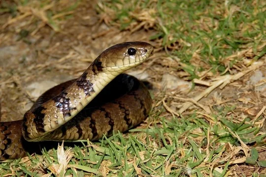
Altos de Pacora Earth SnakeGeophis bellus- No photo yetAmaral's Ground SnakeCaaeteboia amarali
- No photo yetAmaral's Tropical RacerMastigodryas amarali
 Amazon Banded SnakeRhinobothryum lentiginosum
Amazon Banded SnakeRhinobothryum lentiginosum Amazon Basin Tree SnakeImantodes lentiferus
Amazon Basin Tree SnakeImantodes lentiferus- No photo yetAmazon Burrowing SnakeApostolepis niceforoi
 Amazon Coastal House SnakeThamnodynastes pallidus
Amazon Coastal House SnakeThamnodynastes pallidus Amazon False Coral SnakeOxyrhopus rhombifer
Amazon False Coral SnakeOxyrhopus rhombifer Amazon False Fer-de-lanceXenodon severus
Amazon False Fer-de-lanceXenodon severus Amazon Puffing SnakeSpilotes sulphureus
Amazon Puffing SnakeSpilotes sulphureus Amazon Tropical Forest SnakeErythrolamprus pygmaeus
Amazon Tropical Forest SnakeErythrolamprus pygmaeus Amazon Water SnakeHydrops martii
Amazon Water SnakeHydrops martii American Snail-eaterDipsas articulata
American Snail-eaterDipsas articulata Amur RatsnakeElaphe schrenckii
Amur RatsnakeElaphe schrenckii Andaman Bronze-backDendrelaphis andamanensis
Andaman Bronze-backDendrelaphis andamanensis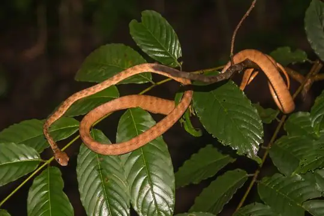
Andaman Cat SnakeBoiga andamanensis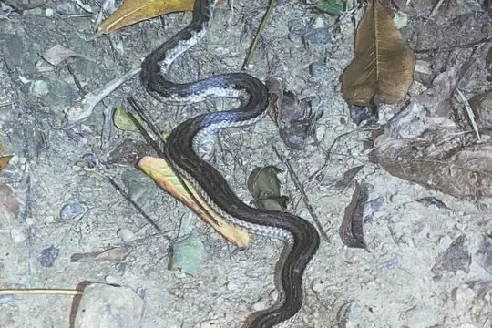
Andaman KeelbackFowlea tytleri Andaman wolf snakeLycodon hypsirhinoides
Andaman wolf snakeLycodon hypsirhinoides- No photo yetAndaman Wolf SnakeLycodon tiwarii
- No photo yetAndean Ground SnakeAtractus andinus
 Andean RacerPseudalsophis elegans
Andean RacerPseudalsophis elegans Andean Snail-eaterDipsas andiana
Andean Snail-eaterDipsas andiana Anderson's Mountain KeelbackOpisthotropis andersonii
Anderson's Mountain KeelbackOpisthotropis andersonii Anderson's Reed SnakeCalamaria andersoni
Anderson's Reed SnakeCalamaria andersoni- No photo yetAndes Centipede SnakeTantilla andinista
 Andrea's KeelbackHebius andreae
Andrea's KeelbackHebius andreae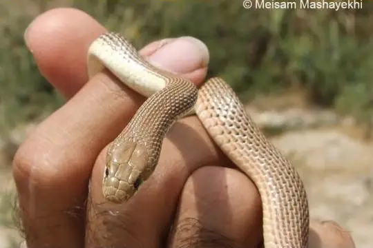
Andreas' RacerDolichophis andreanus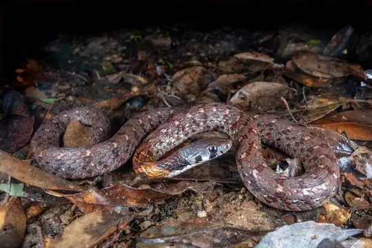
Angel's KeelbackRhabdophis angeli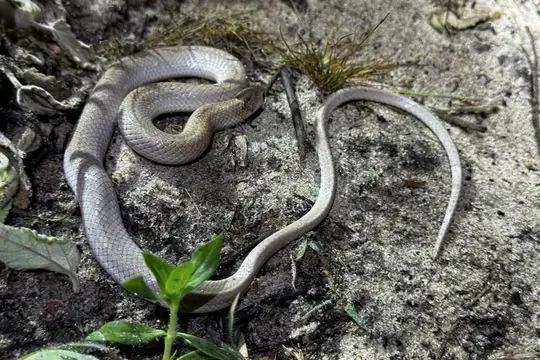
Angel's Kukri SnakeOligodon macrurus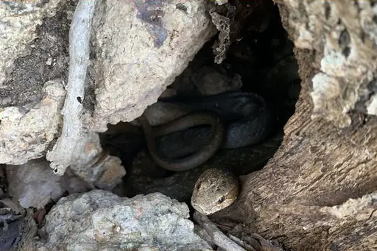
Anguilla RacerAlsophis rijgersmaei Annam KeelbackHebius annamensis
Annam KeelbackHebius annamensis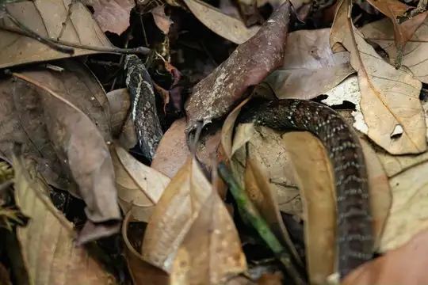
Annam Kukri SnakeOligodon annamensis- No photo yetAnnobon Wood SnakePhilothamnus girardi
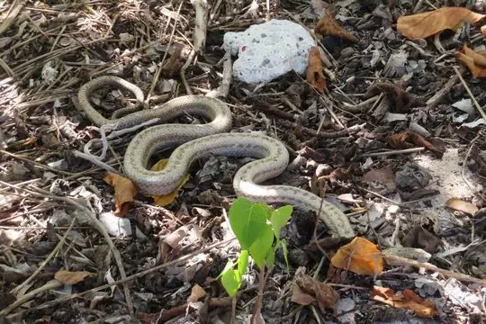
Antiguan racerAlsophis antiguae- No photo yetAntilles RacerAlsophis antillensis
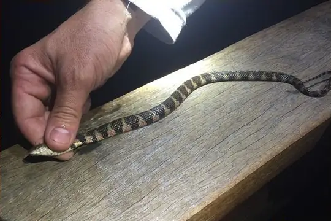
Apiaká KeelbackHelicops apiaka- No photo yetApreocular Reed SnakeCalamaria apraeocularis
- No photo yetApte’s slender snakeTrachischium apteii
- No photo yetApurímac Woodland RacerDrymoluber apurimacensis
 Arabian Cat SnakeTelescopus dhara
Arabian Cat SnakeTelescopus dhara- No photo yetArabian Egg-eaterDasypeltis arabica
 Argentine Pampas SnakePhimophis guerini
Argentine Pampas SnakePhimophis guerini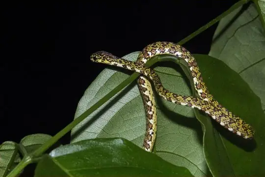
Argus Snail SuckerSibon argus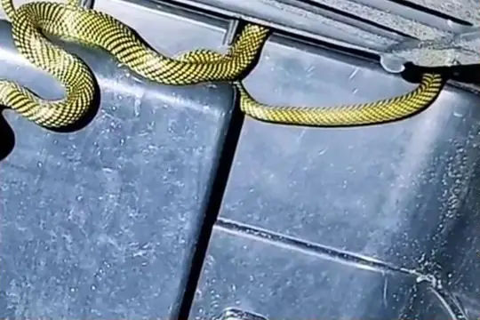
Arnaldo's Green RacerPhilodryas arnaldoi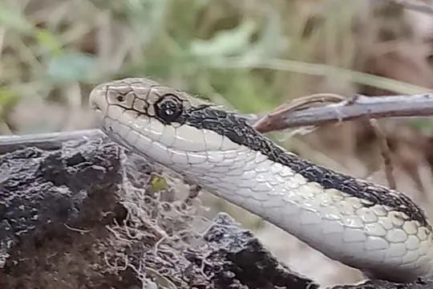
Arrow Ground SnakeErythrolamprus sagittifer- No photo yetAru Island GroundsnakeStegonotus aruensis
- No photo yetArunachal Rain SnakeSmithophis arunachalensis
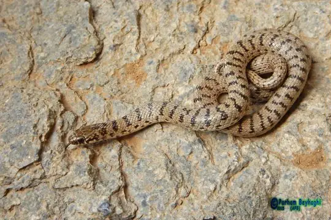
Ashkhabad Dwarf RacerEirenis medus Ashmead's Banded Cat-eyed SnakeLeptodeira ashmeadii
Ashmead's Banded Cat-eyed SnakeLeptodeira ashmeadii Ashok's Bronzeback Tree SnakeDendrelaphis ashoki
Ashok's Bronzeback Tree SnakeDendrelaphis ashoki Ashy Kukri SnakeOligodon cinereus
Ashy Kukri SnakeOligodon cinereus Asia Minor Dwarf RacerEirenis modestus
Asia Minor Dwarf RacerEirenis modestus Asian RacerHemorrhois nummifer
Asian RacerHemorrhois nummifer Asian Vine SnakeAhaetulla prasina
Asian Vine SnakeAhaetulla prasina Asiatic Water SnakeTrimerodytes aequifasciatus
Asiatic Water SnakeTrimerodytes aequifasciatus- No photo yetAssam KeelbackHerpetoreas pealii
 Assam Kukri SnakeOligodon catenatus
Assam Kukri SnakeOligodon catenatus Assam Mountain SnakePlagiopholis nuchalis
Assam Mountain SnakePlagiopholis nuchalis Assamese Cat SnakeBoiga quincunciata
Assamese Cat SnakeBoiga quincunciata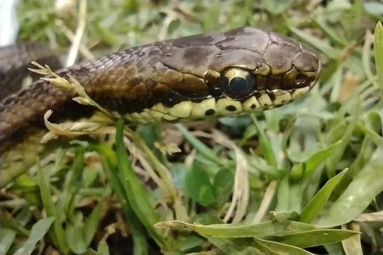
Atahuallpa Saphenophis SnakeSaphenophis atahuallpae Atlantic Central American MilksnakeLampropeltis polyzona
Atlantic Central American MilksnakeLampropeltis polyzona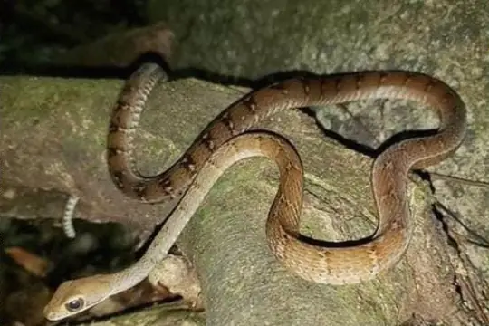
Atlantic Forest RacerDendrophidion atlantica Atlantic Forest Snail-eaterDipsas sazimai
Atlantic Forest Snail-eaterDipsas sazimai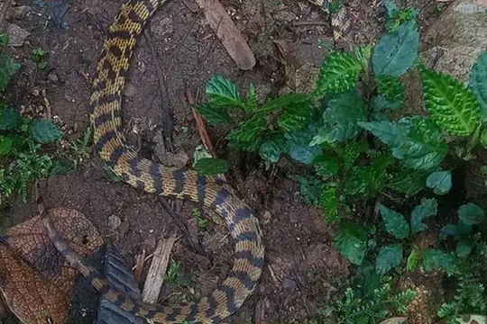
Atlas Ground SnakeAtractus atlas Awl-headed SnakeLytorhynchus diadema
Awl-headed SnakeLytorhynchus diadema- No photo yetAyamaru GroundsnakeStegonotus ayamaru
 Ayerbes’ snail-eaterSibon ayerbeorum
Ayerbes’ snail-eaterSibon ayerbeorum- No photo yetBabongan Kukri SnakeOligodon pulcherrimus
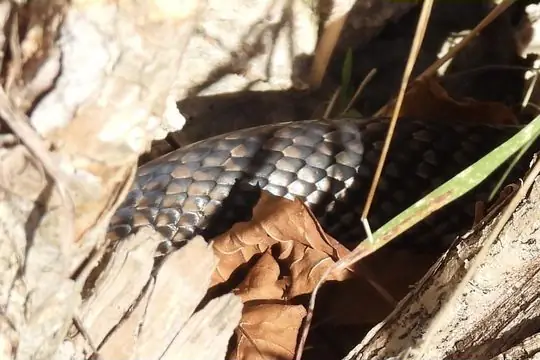
Bahamian Racer (fuscicauda)Cubophis fuscicauda- No photo yetBahia Black-naped SnakeAmnesteophis melanauchen
- No photo yetBaird's Black-headed SnakeTantilla bairdi
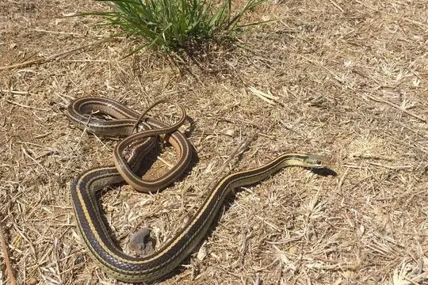
Baird's Patchnose SnakeSalvadora bairdi Baird's Rat SnakePantherophis bairdi
Baird's Rat SnakePantherophis bairdi Baja California CoachwhipMasticophis fuliginosus
Baja California CoachwhipMasticophis fuliginosus Baja California Lyre SnakeTrimorphodon lyrophanes
Baja California Lyre SnakeTrimorphodon lyrophanes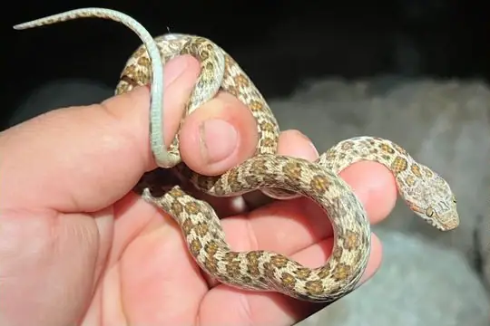
Baja California Night SnakeHypsiglena slevini Baja California Rat SnakeBogertophis rosaliae
Baja California Rat SnakeBogertophis rosaliae Baker's Cat-eyed SnakeLeptodeira bakeri
Baker's Cat-eyed SnakeLeptodeira bakeri Balkan Whip SnakeHierophis gemonensis
Balkan Whip SnakeHierophis gemonensis Bamboo SnakePseudoxenodon bambusicola
Bamboo SnakePseudoxenodon bambusicola Banded BronzebackDendrelaphis striatus
Banded BronzebackDendrelaphis striatus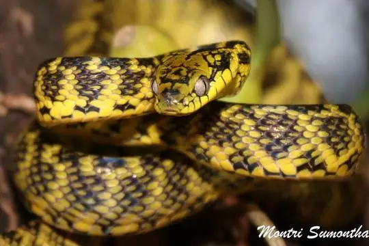
Banded Cat SnakeBoiga saengsomi Banded Cat-eyed Snake (annulata)Leptodeira annulata
Banded Cat-eyed Snake (annulata)Leptodeira annulata Banded Centipede SnakeTantilla supracincta
Banded Centipede SnakeTantilla supracincta- No photo yetBanded Galapagos SnakePseudalsophis slevini
 Banded Ground SnakeAtractus multicinctus
Banded Ground SnakeAtractus multicinctus Banded Hognose SnakeXenodon pulcher
Banded Hognose SnakeXenodon pulcher Banded KukriOligodon arnensis
Banded KukriOligodon arnensis Banded Pampas SnakePhimophis vittatus
Banded Pampas SnakePhimophis vittatus Banded Racer (fasciolata)Argyrogena fasciolata
Banded Racer (fasciolata)Argyrogena fasciolata Banded Racer (fasciolatus)Lycodon fasciolatus
Banded Racer (fasciolatus)Lycodon fasciolatus Banded Sand Snake (cincta)Sonora cincta
Banded Sand Snake (cincta)Sonora cincta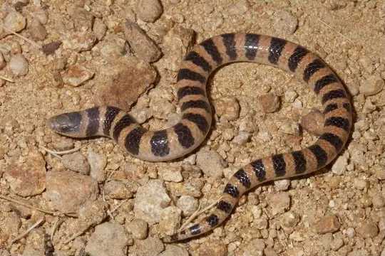
Banded Sand Snake (fasciata)Sonora fasciata Banded Snail SuckerTropidodipsas fasciata
Banded Snail SuckerTropidodipsas fasciata Banded Wolf SnakeLycodon fasciatus
Banded Wolf SnakeLycodon fasciatus Banggai Reed SnakeCalamaria banggaiensis
Banggai Reed SnakeCalamaria banggaiensis Bangweulu Water SnakeLimnophis bangweolicus
Bangweulu Water SnakeLimnophis bangweolicus Banks' Wolf SnakeLycodon banksi
Banks' Wolf SnakeLycodon banksi Bar-necked KeelbackFowlea schnurrenbergeri
Bar-necked KeelbackFowlea schnurrenbergeri- No photo yetBaram False CobraPseudoxenodon baramensis
 Baran Dwarf RacerEirenis barani
Baran Dwarf RacerEirenis barani Baran's Dwarf SnakeMuhtarophis barani
Baran's Dwarf SnakeMuhtarophis barani- No photo yetBarbour's Centipede SnakeTantilla albiceps
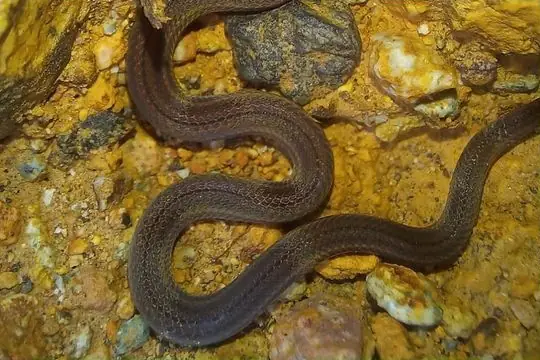
Barbour's Tropical Ground SnakeTrimetopon barbouri Barbour's Tropical RacerMastigodryas bruesi
Barbour's Tropical RacerMastigodryas bruesi Barbour's Water SnakeRhabdophis barbouri
Barbour's Water SnakeRhabdophis barbouri Barnes’s Cat SnakeBoiga barnesii
Barnes’s Cat SnakeBoiga barnesii Baron's Green RacerPhilodryas baroni
Baron's Green RacerPhilodryas baroni Barotse Water SnakeCrotaphopeltis barotseensis
Barotse Water SnakeCrotaphopeltis barotseensis Barred Forest RacerDendrophidion vinitor
Barred Forest RacerDendrophidion vinitor Barred KeelbackTropidonophis doriae
Barred KeelbackTropidonophis doriae Barred Kukri SnakeOligodon signatus
Barred Kukri SnakeOligodon signatus Barred Wolf SnakeLycodon striatus
Barred Wolf SnakeLycodon striatus- No photo yetBarreras Fanged SnakeIaltris agyrtes
 Barron's Kukri SnakeOligodon barroni
Barron's Kukri SnakeOligodon barroni Basin Ground SnakeAtractus poeppigi
Basin Ground SnakeAtractus poeppigi- No photo yetBassler's SnakeEutrachelophis bassleri
 Batjan Frog-eating SnakeStegonotus batjanensis
Batjan Frog-eating SnakeStegonotus batjanensis- No photo yetBatjan Iridescent SnakeCalamorhabdium kuekenthali
 Battersby's Green SnakePhilothamnus battersbyi
Battersby's Green SnakePhilothamnus battersbyi- No photo yetBattersby's Reed SnakeCalamaria battersbyi
- No photo yetBavi KeelbackRhabdophis callichroma
- No photo yetBeaked BlackheadApostolepis vittata
 Beautiful calico snakeOxyrhopus formosus
Beautiful calico snakeOxyrhopus formosus- No photo yetBeautiful Cat SnakeTelescopus pulcher
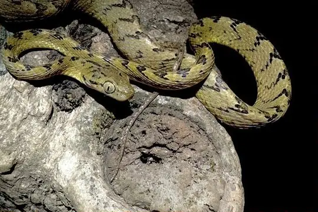
Beddome's Cat SnakeBoiga beddomei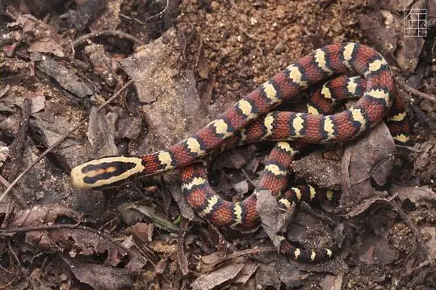
Bella Rat SnakeArchelaphe bella Bengkulu Cat SnakeBoiga bengkuluensis
Bengkulu Cat SnakeBoiga bengkuluensis- No photo yetBengkulu Reed SnakeCalamaria alidae
- No photo yetBenito Juarez's Earth SnakeGeophis juarezi
 Bequaert's Green SnakePhilothamnus bequaerti
Bequaert's Green SnakePhilothamnus bequaerti Betanien Earth SnakeGeophis betaniensis
Betanien Earth SnakeGeophis betaniensis Bev Ridgely’s Snail-EaterSibon bevridgelyi
Bev Ridgely’s Snail-EaterSibon bevridgelyi Bibron's False Coral SnakeOxyrhopus doliatus
Bibron's False Coral SnakeOxyrhopus doliatus Bicolored Shadow SnakeSynophis bicolor
Bicolored Shadow SnakeSynophis bicolor Bicolored Swamp SnakeLimnophis bicolor
Bicolored Swamp SnakeLimnophis bicolor Bicoloured Reed SnakeCalamaria bicolor
Bicoloured Reed SnakeCalamaria bicolor Big Bend Blackhead SnakeTantilla cucullata
Big Bend Blackhead SnakeTantilla cucullata Big Bend Patchnose SnakeSalvadora deserticola
Big Bend Patchnose SnakeSalvadora deserticola Big Ground SnakeAtractus major
Big Ground SnakeAtractus major big-eyed tree snakeDendrelaphis macrops
big-eyed tree snakeDendrelaphis macrops Big-tooth SnakeLycodon flavozonatus
Big-tooth SnakeLycodon flavozonatus Bignose Ground SnakeAtractus obtusirostris
Bignose Ground SnakeAtractus obtusirostris Bindee keelbackRhabdophis bindi
Bindee keelbackRhabdophis bindi Binh’s Bronzeback SnakeDendrelaphis binhi
Binh’s Bronzeback SnakeDendrelaphis binhi- No photo yetBismark Ground SnakeStegonotus heterurus
- No photo yetBismark KeelbackTropidonophis hypomelas
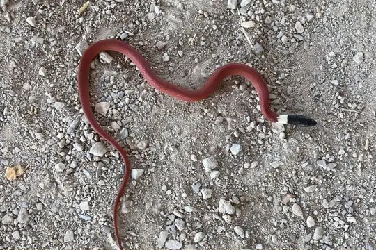
Black Banded SnakeConiophanes melanocephalus- No photo yetBlack Centipede SnakeTantilla nigra
 Black False BoaPseudoboa nigra
Black False BoaPseudoboa nigra Black Forest RacerDrymobius melanotropis
Black Forest RacerDrymobius melanotropis Black Ground SnakeAtractus elaps
Black Ground SnakeAtractus elaps Black KingsnakeLampropeltis nigra
Black KingsnakeLampropeltis nigra Black MilksnakeLampropeltis micropholis
Black MilksnakeLampropeltis micropholis- No photo yetBlack RacerHypsirhynchus ater
 Black Rat SnakePantherophis obsoletus
Black Rat SnakePantherophis obsoletus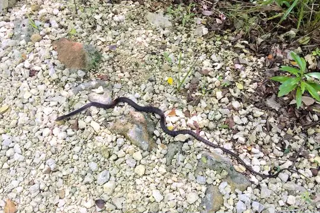
Black SnakeCubophis caymanus Black SwampsnakeLiodytes pygaea
Black SwampsnakeLiodytes pygaea Black Tree Snake (occidentalis)Thrasops occidentalis
Black Tree Snake (occidentalis)Thrasops occidentalis Black-banded Cat-eyed SnakeLeptodeira nigrofasciata
Black-banded Cat-eyed SnakeLeptodeira nigrofasciata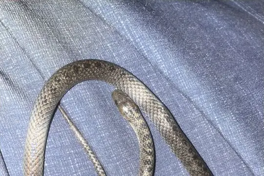
Black-banded Earth SnakeGeophis nigrocinctus Black-banded SnakeScolecophis atrocinctus
Black-banded SnakeScolecophis atrocinctus Black-collared SnakeDrepanoides anomalus
Black-collared SnakeDrepanoides anomalus Black-headed Cat SnakeBoiga nigriceps
Black-headed Cat SnakeBoiga nigriceps- No photo yetBlack-headed Ground SnakeAtractus nigricauda
- No photo yetBlack-headed Smooth SnakeMeizodon plumbiceps
 Black-headed Snake (melanocephala)Tantilla melanocephala
Black-headed Snake (melanocephala)Tantilla melanocephala Black-headed Snake (melanocephalus)Rhynchocalamus melanocephalus
Black-headed Snake (melanocephalus)Rhynchocalamus melanocephalus Black-headed Snake (nigriceps)Telescopus nigriceps
Black-headed Snake (nigriceps)Telescopus nigriceps Black-lined Green SnakeHapsidophrys lineatus
Black-lined Green SnakeHapsidophrys lineatus Black-lipped groundsnakeStegonotus melanolabiatus
Black-lipped groundsnakeStegonotus melanolabiatus Black-striped Rat SnakePtyas dhumnades
Black-striped Rat SnakePtyas dhumnades Black-striped Snake (imperialis)Coniophanes imperialis
Black-striped Snake (imperialis)Coniophanes imperialis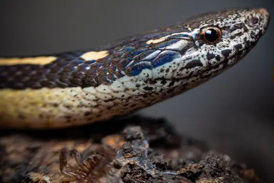
Black-striped Snake (taeniata)Coniophanes taeniata- No photo yetBlack-ventered Ground SnakeAtractus nigriventris
 Blackbelly Centipede SnakeTantilla moesta
Blackbelly Centipede SnakeTantilla moesta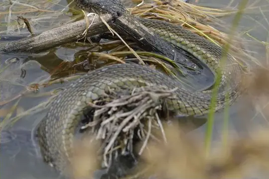
Blackbelly Garter SnakeThamnophis melanogaster- No photo yetBlackbelly Ground SnakeAtractus melanogaster
 Blackbelly SnakeHydraethiops melanogaster
Blackbelly SnakeHydraethiops melanogaster Blackbelly Worm-eating SnakeTrachischium fuscum
Blackbelly Worm-eating SnakeTrachischium fuscum Blackneck Garter SnakeThamnophis cyrtopsis
Blackneck Garter SnakeThamnophis cyrtopsis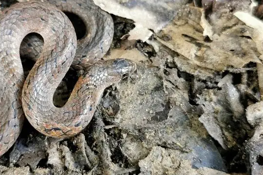
Blakeway's Mountain SnakePlagiopholis blakewayi- No photo yetBlanchard's Earth SnakeGeophis blanchardi
 Blandings Tree SnakeToxicodryas blandingii
Blandings Tree SnakeToxicodryas blandingii Blanford's Bridal SnakeLycodon davisonii
Blanford's Bridal SnakeLycodon davisonii Bleek's Kukri SnakeOligodon waandersi
Bleek's Kukri SnakeOligodon waandersi- No photo yetBleeker's Dwarf SnakeCalamaria margaritophora
 Blood SnakeStenorrhina freminvillei
Blood SnakeStenorrhina freminvillei Bloody Ground SnakeAtractus sanguineus
Bloody Ground SnakeAtractus sanguineus Blossom KraitRhabdophis ceylonensis
Blossom KraitRhabdophis ceylonensis Blotched Hooknose SnakeFicimia publia
Blotched Hooknose SnakeFicimia publia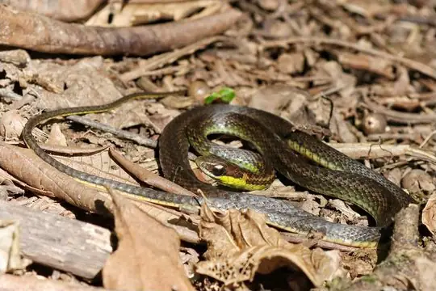
Blue Flanked Leaf Litter SnakeEchinanthera cyanopleura Blue Nile Cat SnakeTelescopus gezirae
Blue Nile Cat SnakeTelescopus gezirae Blue-eyed Bush Rat SnakeGonyosoma coeruleum
Blue-eyed Bush Rat SnakeGonyosoma coeruleum Blue-necked KeelbackRhabdophis rhodomelas
Blue-necked KeelbackRhabdophis rhodomelas Bluebelly Java SnakeTetralepis fruhstorferi
Bluebelly Java SnakeTetralepis fruhstorferi- No photo yetBluebelly Kukri SnakeOligodon melaneus
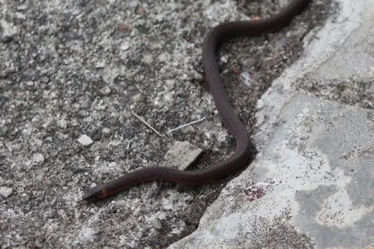
Blyth's Reticulate SnakeBlythia reticulata Bock's Ground SnakeAtractus bocki
Bock's Ground SnakeAtractus bocki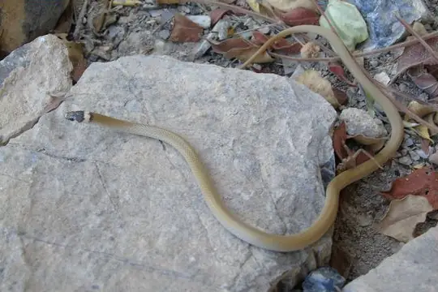
Bocourt's Black-headed SnakeTantilla bocourti Bocourt's Ground SnakeAtractus bocourti
Bocourt's Ground SnakeAtractus bocourti- No photo yetBocourt's Snail-eaterDipsas viguieri
 Boddaert's Tropical RacerMastigodryas boddaerti
Boddaert's Tropical RacerMastigodryas boddaerti Boehme's Wolf SnakeLycodon synaptor
Boehme's Wolf SnakeLycodon synaptor- No photo yetBoeseman's Reed SnakeCalamaria boesemani
- No photo yetBoettger's KeelbackRhabdophis callistus
 Boettger's SipoChironius flavolineatus
Boettger's SipoChironius flavolineatus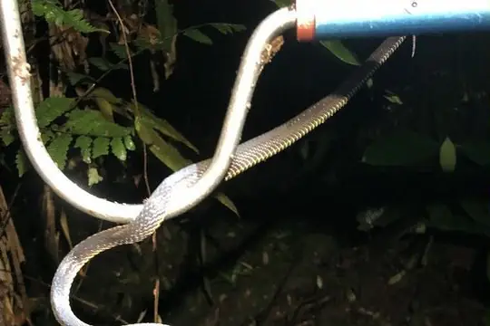
Bogert's Shadow SnakeSynophis bogerti Boie's Dwarf SnakeCalamaria virgulata
Boie's Dwarf SnakeCalamaria virgulata Boie's Ground SnakeAtractus badius
Boie's Ground SnakeAtractus badius- No photo yetBoie's KeelbackRhabdophis spilogaster
 Boie's Kukri SnakeOligodon bitorquatus
Boie's Kukri SnakeOligodon bitorquatus Boie's Many-Tooth SnakeSibynophis geminatus
Boie's Many-Tooth SnakeSibynophis geminatus Boie's Rough-sided SnakeAspidura brachyorrhos
Boie's Rough-sided SnakeAspidura brachyorrhos- No photo yetBolivian Burrowing SnakeApostolepis dorbignyi
 Bolivian RacerPhilodryas boliviana
Bolivian RacerPhilodryas boliviana Bolivian Tree SnakeDipsas turgida
Bolivian Tree SnakeDipsas turgida BoomslangDispholidus typus
BoomslangDispholidus typus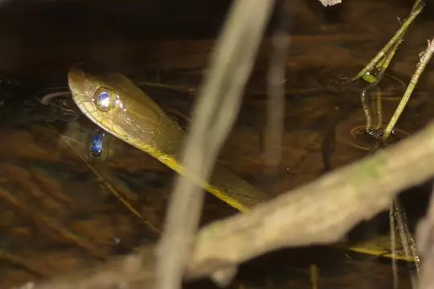
Boonsong's KeelbackIsanophis boonsongi Bornean Black SnakeStegonotus borneensis
Bornean Black SnakeStegonotus borneensis Bornean Reed SnakeCalamaria borneensis
Bornean Reed SnakeCalamaria borneensis- No photo yetBorrelli's Burrowing SnakeApostolepis borellii
 Boulenger's BronzebackDendrelaphis bifrenalis
Boulenger's BronzebackDendrelaphis bifrenalis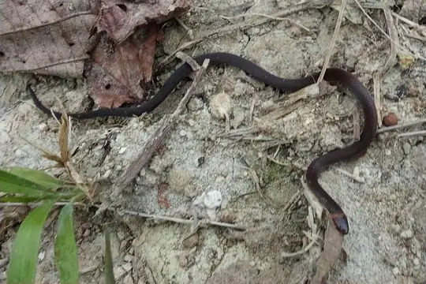
Boulenger's Centipede SnakeTantilla alticola Boulenger's False Coral SnakeOxyrhopus marcapatae
Boulenger's False Coral SnakeOxyrhopus marcapatae Boulenger's KeelbackHebius boulengeri
Boulenger's KeelbackHebius boulengeri Boulenger's Keelback (asperrimus)Fowlea asperrimus
Boulenger's Keelback (asperrimus)Fowlea asperrimus- No photo yetBoulenger's Slender SnakeTachymenis affinis
 Boulenger's Tree SnakeDipsas ventrimaculata
Boulenger's Tree SnakeDipsas ventrimaculata- No photo yetBourret's Cat SnakeBoiga bourreti
 Bozanti Dwarf RacerEirenis aurolineatus
Bozanti Dwarf RacerEirenis aurolineatus- No photo yetBrahui RacerPlatyceps noeli
- No photo yetBraid SnakePlatyceps ladacensis
 Braided Shadow SnakeSynophis plectovertebralis
Braided Shadow SnakeSynophis plectovertebralis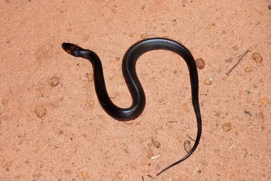
Brazilian Bird SnakeRhachidelus brazili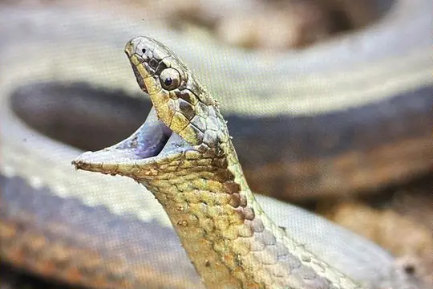
Brazilian Burrowing SnakeGomesophis brasiliensis Brazilian False Coral SnakeOxyrhopus trigeminus
Brazilian False Coral SnakeOxyrhopus trigeminus Brazilian Green RacerPhilodryas aestiva
Brazilian Green RacerPhilodryas aestiva Brazilian KeelbackHelicops infrataeniatus
Brazilian KeelbackHelicops infrataeniatus Brazilian MussuranaMussurana quimi
Brazilian MussuranaMussurana quimi Brazilian SipoChironius laevicollis
Brazilian SipoChironius laevicollis Brazilian Snail EaterDipsas mikanii
Brazilian Snail EaterDipsas mikanii Brazilian Spotted Night SnakeSiphlophis longicaudatus
Brazilian Spotted Night SnakeSiphlophis longicaudatus Brazilian Woodland RacerDrymoluber brazili
Brazilian Woodland RacerDrymoluber brazili Brazos Water SnakeNerodia harteri
Brazos Water SnakeNerodia harteri- No photo yetBridled KeelbackHebius frenatus
- No photo yetBriggs' Centipede SnakeTantilla briggsi
 Broadhead Ground SnakeAtractus latifrons
Broadhead Ground SnakeAtractus latifrons- No photo yetBrokencollar Graceful Brown SnakeRhadinella schistosa
- No photo yetBrongersma's Reed SnakeCalamaria brongersmai
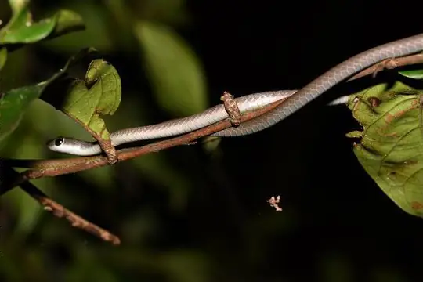
Brown Bush SnakePhilothamnus brunneus Brown Fanged SnakeIaltris dorsalis
Brown Fanged SnakeIaltris dorsalis Brown Kukri SnakeOligodon purpurascens
Brown Kukri SnakeOligodon purpurascens Brown SipoChironius fuscus
Brown SipoChironius fuscus Brown SnakeStoreria dekayi
Brown SnakeStoreria dekayi- No photo yetBrown Stream SnakeParatapinophis praemaxillaris
 Brown Trapezoid SnakeSmithophis bicolor
Brown Trapezoid SnakeSmithophis bicolor Brown Tree SnakeBoiga irregularis
Brown Tree SnakeBoiga irregularis Brown Vine Snake (anomala)Ahaetulla anomala
Brown Vine Snake (anomala)Ahaetulla anomala Brown VinesnakeOxybelis aeneus
Brown VinesnakeOxybelis aeneus Brown Water Snake (taxispilota)Nerodia taxispilota
Brown Water Snake (taxispilota)Nerodia taxispilota Brown Wolf SnakeLycodon effraenis
Brown Wolf SnakeLycodon effraenis Brown-speckled WhipsnakeAhaetulla pulverulenta
Brown-speckled WhipsnakeAhaetulla pulverulenta Buff Striped KeelbackAmphiesma stolatum
Buff Striped KeelbackAmphiesma stolatum BullsnakePituophis catenifer
BullsnakePituophis catenifer- No photo yetBurbrink's KeelbackHerpetoreas burbrinki
 Burmese BronzebackDendrelaphis subocularis
Burmese BronzebackDendrelaphis subocularis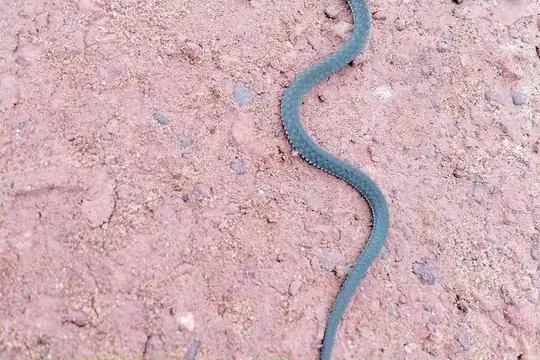
Burmese Keelback Water SnakeXenochrophis bellulus Burrowing Night SnakePhilodryas agassizii
Burrowing Night SnakePhilodryas agassizii Burrowing SnakeAdelphicos nigrilatum
Burrowing SnakeAdelphicos nigrilatum Butler's Garter SnakeThamnophis butleri
Butler's Garter SnakeThamnophis butleri Butler's Wolf SnakeLycodon butleri
Butler's Wolf SnakeLycodon butleri Buton Island Dwarf SnakeCalamaria butonensis
Buton Island Dwarf SnakeCalamaria butonensis- No photo yetCaesar's African Water SnakeGrayia caesar
 Calamaria Reed SnakeLiopeltis calamaria
Calamaria Reed SnakeLiopeltis calamaria Calamitous Shadow SnakeSynophis calamitus
Calamitous Shadow SnakeSynophis calamitus California KingsnakeLampropeltis californiae
California KingsnakeLampropeltis californiae California Mountain KingsnakeLampropeltis zonata
California Mountain KingsnakeLampropeltis zonata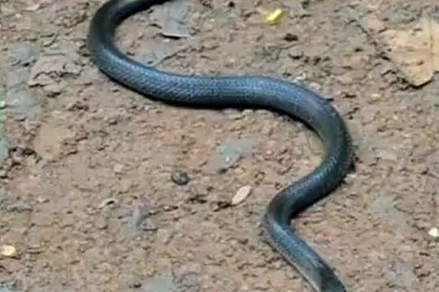
Cambodian Kukri Snake (kampucheaensis)Oligodon kampucheaensis- No photo yetCamorta Island Stripe-necked SnakeGongylosoma nicobariensis
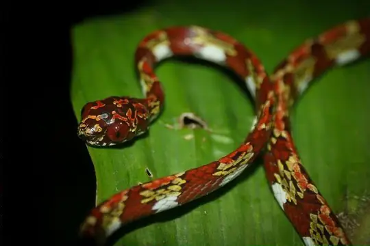
Canopy Snail-eating SnakeSibon canopy Cantor's Kukri SnakeOligodon cyclurus
Cantor's Kukri SnakeOligodon cyclurus Cantor’s black-headed snakeSibynophis sagittarius
Cantor’s black-headed snakeSibynophis sagittarius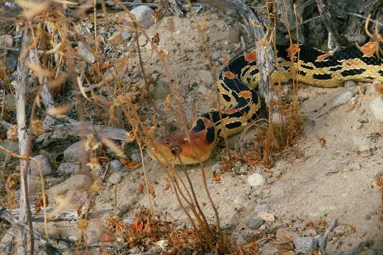
Cape Gopher SnakePituophis vertebralis Cape Striped WhipsnakeMasticophis aurigulus
Cape Striped WhipsnakeMasticophis aurigulus Capistrata Centipede SnakeTantilla capistrata
Capistrata Centipede SnakeTantilla capistrata Cardamom Mountains Wolf SnakeLycodon cardamomensis
Cardamom Mountains Wolf SnakeLycodon cardamomensis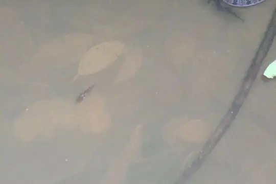
Caribbean Water SnakeTretanorhinus variabilis Carr's Snail SuckerSibon carri
Carr's Snail SuckerSibon carri Cat SnakeTelescopus fallax
Cat SnakeTelescopus fallax Cat-eyed Snake (septentrionalis)Leptodeira septentrionalis
Cat-eyed Snake (septentrionalis)Leptodeira septentrionalis Catesby's Pointed SnakeUromacer catesbyi
Catesby's Pointed SnakeUromacer catesbyi Catesby's Snail-eaterDipsas catesbyi
Catesby's Snail-eaterDipsas catesbyi Cave RacerElaphe taeniura
Cave RacerElaphe taeniura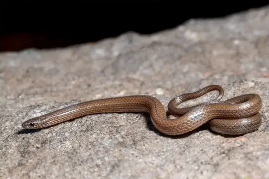
Ceboruco Centipede SnakeTantilla ceboruca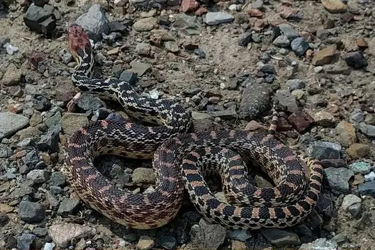
Cedros Gopher SnakePituophis insulanus Cei's Ground SnakeErythrolamprus ceii
Cei's Ground SnakeErythrolamprus ceii Celebes Black-tailed RatsnakeGonyosoma jansenii
Celebes Black-tailed RatsnakeGonyosoma jansenii Central African Egg-eating SnakeDasypeltis fasciata
Central African Egg-eating SnakeDasypeltis fasciata Central America Lizard EaterMastigodryas alternatus
Central America Lizard EaterMastigodryas alternatus Central American Centipede SnakeTantilla taeniata
Central American Centipede SnakeTantilla taeniata Central American Indigo SnakeDrymarchon melanurus
Central American Indigo SnakeDrymarchon melanurus Central American Lyre SnakeTrimorphodon quadruplex
Central American Lyre SnakeTrimorphodon quadruplex Central American Tree SnakeImantodes gemmistratus
Central American Tree SnakeImantodes gemmistratus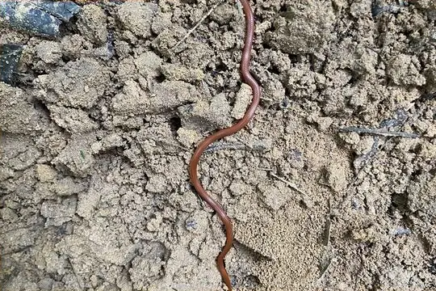
Central Burrowing SnakeApostolepis flavotorquata Central Plains MilksnakeLampropeltis gentilis
Central Plains MilksnakeLampropeltis gentilis Central Sipo (maculoventris)Chironius maculoventris
Central Sipo (maculoventris)Chironius maculoventris Central Sipo (quadricarinatus)Chironius quadricarinatus
Central Sipo (quadricarinatus)Chironius quadricarinatus Ceram Dwarf SnakeCalamaria ceramensis
Ceram Dwarf SnakeCalamaria ceramensis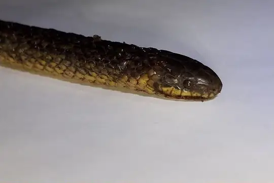
Cerberus GroundsnakeAtractus cerberus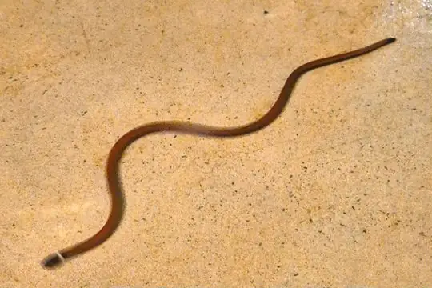
Cerrado BlackheadApostolepis albicollaris Cerrado RacerPhilodryas livida
Cerrado RacerPhilodryas livida- Cerralvo longnose snakeRhinocheilus etheridgei
- Cerro Texiguat Earth SnakeGeophis damiani
 Ceylon KeelbackAspidura ceylonensis
Ceylon KeelbackAspidura ceylonensis Ceylon Wolf SnakeLycodon carinatus
Ceylon Wolf SnakeLycodon carinatus- No photo yetChaco Burrowing SnakePhalotris normanscotti
- No photo yetChacoan BlackheadApostolepis breviceps
 Chan-ard Mountain Reed SnakeMacrocalamus chanardi
Chan-ard Mountain Reed SnakeMacrocalamus chanardi Chapa Mountain KeelbackOpisthotropis jacobi
Chapa Mountain KeelbackOpisthotropis jacobi Chapada Diamantina SipoChironius diamantina
Chapada Diamantina SipoChironius diamantina Chapare Snail-eaterDipsas chaparensis
Chapare Snail-eaterDipsas chaparensis Checkered Garter SnakeThamnophis marcianus
Checkered Garter SnakeThamnophis marcianus- No photo yetCheckered KeelbackXenochrophis piscator
 Chequered KeelbackFowlea piscator
Chequered KeelbackFowlea piscator- Chiapan Stripeless SnakeConiophanes alvarezi
 Chiapas Earth SnakeGeophis cancellatus
Chiapas Earth SnakeGeophis cancellatus Chicken SnakeSpilotes pullatus
Chicken SnakeSpilotes pullatus Chihuahuan Blackhead SnakeTantilla wilcoxi
Chihuahuan Blackhead SnakeTantilla wilcoxi Chihuahuan NightsnakeHypsiglena jani
Chihuahuan NightsnakeHypsiglena jani- Chilean Green RacerPhilodryas chamissonis
- No photo yetChilean Slender SnakeTachymenis chilensis
 Chin Hills KeelbackHebius venningi
Chin Hills KeelbackHebius venningi- Chinese Bamboo SnakePseudoxenodon karlschmidti
 Chinese Keelback Water SnakeTrimerodytes percarinatus
Chinese Keelback Water SnakeTrimerodytes percarinatus Chinese Kukri SnakeOligodon chinensis
Chinese Kukri SnakeOligodon chinensis- Chinese Leopard SnakeElaphe bimaculata
 Chinese Many-tooth SnakeSibynophis chinensis
Chinese Many-tooth SnakeSibynophis chinensis Chinese Mountain KeelbackOpisthotropis kuatunensis
Chinese Mountain KeelbackOpisthotropis kuatunensis- Chinese Mountain SnakePlagiopholis styani
- Chiwen KeelbackRhabdophis chiwen
 Chocoan Blunt-headed Vine SnakeImantodes chocoensis
Chocoan Blunt-headed Vine SnakeImantodes chocoensis- Christine's BlackheadApostolepis christineae
- Chucantí Centipede SnakeTantilla berguidoi
 Cincuate Bull SnakePituophis lineaticollis
Cincuate Bull SnakePituophis lineaticollis Clarión Whip SnakeMasticophis anthonyi
Clarión Whip SnakeMasticophis anthonyi Clark's Forest RacerDendrophidion clarkii
Clark's Forest RacerDendrophidion clarkii Clark's Ground SnakeAtractus clarki
Clark's Ground SnakeAtractus clarki Clifton's Lizard EaterMastigodryas cliftoni
Clifton's Lizard EaterMastigodryas cliftoni Cloud Forest Earth SnakeGeophis nephodrymus
Cloud Forest Earth SnakeGeophis nephodrymus Cloud Forest Parrot SnakeLeptophis modestus
Cloud Forest Parrot SnakeLeptophis modestus- No photo yetClouded Reed SnakeCalamaria nebulosa
- Cloudy Snail-eating SnakeSibon nebulatus
 CoachwhipMasticophis flagellum
CoachwhipMasticophis flagellum Coal SnakePseudoboa neuwiedii
Coal SnakePseudoboa neuwiedii Coast NightsnakeHypsiglena ochrorhynchus
Coast NightsnakeHypsiglena ochrorhynchus- No photo yetCoastal House Snake (strigatus)Thamnodynastes strigatus
 Coffee Earth SnakeGeophis nasalis
Coffee Earth SnakeGeophis nasalis Collared CatsnakeBoiga nuchalis
Collared CatsnakeBoiga nuchalis Collared Dwarf SnakeEirenis collaris
Collared Dwarf SnakeEirenis collaris Collared Ground SnakeAtractus collaris
Collared Ground SnakeAtractus collaris- No photo yetCollared Kukri SnakeOligodon torquatus
 Collared Reed Snake (leucogaster)Calamaria leucogaster
Collared Reed Snake (leucogaster)Calamaria leucogaster Collared Reed Snake (pavimentata)Calamaria pavimentata
Collared Reed Snake (pavimentata)Calamaria pavimentata- Colombian Earth Snake (brachycephalus)Geophis brachycephalus
 Colombian Earth Snake (nigroalbus)Geophis nigroalbus
Colombian Earth Snake (nigroalbus)Geophis nigroalbus- No photo yetColombian Frog-eating SnakeDiaphorolepis laevis
 Colombian Longtail SnakeEnuliophis sclateri
Colombian Longtail SnakeEnuliophis sclateri- No photo yetColombo Wolf SnakeLycodon anamallensis
- No photo yetColorado Desert Shovelnose SnakeChionactis annulata
 Common bilineate BlackheadApostolepis dimidiata
Common bilineate BlackheadApostolepis dimidiata Common BronzebackDendrelaphis schokari
Common BronzebackDendrelaphis schokari Common Cat SnakeBoiga trigonata
Common Cat SnakeBoiga trigonata Common Collared SnakePseudorabdion collaris
Common Collared SnakePseudorabdion collaris Common Egg EaterDasypeltis scabra
Common Egg EaterDasypeltis scabra Common GartersnakeThamnophis sirtalis
Common GartersnakeThamnophis sirtalis- No photo yetCommon Graceful Brown SnakeRhadinaea pulveriventris
 Common Green RacerChlorosoma viridissimum
Common Green RacerChlorosoma viridissimum- Common Island RacerArrhyton vittatum
 Common KingsnakeLampropeltis getula
Common KingsnakeLampropeltis getula Common Many-tooth SnakeSibynophis collaris
Common Many-tooth SnakeSibynophis collaris Common Neckband SnakeScaphiodontophis venustissimus
Common Neckband SnakeScaphiodontophis venustissimus Common RingneckGongylosoma scriptum
Common RingneckGongylosoma scriptum Common Rough-sided SnakeAspidura trachyprocta
Common Rough-sided SnakeAspidura trachyprocta Common Spotted Night SnakeSiphlophis leucocephalus
Common Spotted Night SnakeSiphlophis leucocephalus Common WatersnakeNerodia sipedon
Common WatersnakeNerodia sipedon Common Wolf Snake (aulicus)Lycodon aulicus
Common Wolf Snake (aulicus)Lycodon aulicus Common Wolf Snake (capucinus)Lycodon capucinus
Common Wolf Snake (capucinus)Lycodon capucinus- No photo yetCommon Wolf Snake (solivagus)Lycodon solivagus
 Common WormsnakeCarphophis amoenus
Common WormsnakeCarphophis amoenus- Conant's Garter SnakeThamnophis conanti
 Concho Water SnakeNerodia paucimaculata
Concho Water SnakeNerodia paucimaculata Confusing Egg EaterDasypeltis confusa
Confusing Egg EaterDasypeltis confusa Cope's Antilles SnakeHypsirhynchus parvifrons
Cope's Antilles SnakeHypsirhynchus parvifrons Cope's Black-striped SnakeConiophanes piceivittis
Cope's Black-striped SnakeConiophanes piceivittis- Cope's Coffee SnakeNinia psephota
- Cope's Earth SnakeConopsis acuta
 Cope's False Coral SnakePliocercus euryzonus
Cope's False Coral SnakePliocercus euryzonus- Cope's Forest RacerDendrophidion paucicarinatum
 Cope's Ground SnakeAtractus microrhynchus
Cope's Ground SnakeAtractus microrhynchus- No photo yetCope's Mountain Meadow SnakeAdelophis copei
 Cope's Parrot SnakeLeptophis depressirostris
Cope's Parrot SnakeLeptophis depressirostris Cope's Rough-sideAspidura copei
Cope's Rough-sideAspidura copei Cope's Snail SuckerSibon anthracops
Cope's Snail SuckerSibon anthracops Cope's Snail-eaterDipsas copei
Cope's Snail-eaterDipsas copei- Cope's Tropical Ground SnakeTrimetopon pliolepis
 Cope's Tropical RacerMastigodryas pulchriceps
Cope's Tropical RacerMastigodryas pulchriceps Cope's Vine SnakeOxybelis brevirostris
Cope's Vine SnakeOxybelis brevirostris Copper Parrot SnakeLeptophis cupreus
Copper Parrot SnakeLeptophis cupreus- Coral Earth SnakeGeophis semidoliatus
- Coral Red Kukri SnakeOligodon kheriensis
 Corn SnakePantherophis guttatus
Corn SnakePantherophis guttatus- Costa Rica Coffee SnakeNinia celata
 Costa Rica Water SnakeHydromorphus concolor
Costa Rica Water SnakeHydromorphus concolor- Costa Rican Glasstail SnakeUrotheca pachyura
- Costa Rican SnaileaterSibon lamari
 Costal Lyre SnakeTrimorphodon biscutatus
Costal Lyre SnakeTrimorphodon biscutatus Crayfish SnakeLiodytes rigida
Crayfish SnakeLiodytes rigida Cross-barred SnakeDipsadoboa aulica
Cross-barred SnakeDipsadoboa aulica- No photo yetCross-marked Egg-eaterDasypeltis crucifera
- Crown Ground SnakeErythrolamprus viridis
 Crowned Dwarf RacerEirenis coronella
Crowned Dwarf RacerEirenis coronella Crowned False BoaPseudoboa coronata
Crowned False BoaPseudoboa coronata Crowned Graceful Brown SnakeRhadinaea laureata
Crowned Graceful Brown SnakeRhadinaea laureata- No photo yetCrying KeelbackHebius lacrima
- Cu Lao Cham Kukri SnakeOligodon culaochamensis
- No photo yetCuban Island RacerArrhyton ainictum
 Cuban Lesser RacerCaraiba andreae
Cuban Lesser RacerCaraiba andreae Cuban RacerCubophis cantherigerus
Cuban RacerCubophis cantherigerus- No photo yetCuc's Mountain SnakeOpisthotropis cucae
 CulebraParaphimophis rusticus
CulebraParaphimophis rusticus- No photo yetCunene RacerMopanveldophis zebrinus
 Cusuco Graceful Brown SnakeRhadinella pegosalyta
Cusuco Graceful Brown SnakeRhadinella pegosalyta- Cuyan Burrowing SnakePhalotris cuyanus
- Cyprus Whip SnakeHierophis cypriensis
 Dagger-tooth Vine SnakeXyelodontophis uluguruensis
Dagger-tooth Vine SnakeXyelodontophis uluguruensis- Dahl's Whip SnakePlatyceps najadum
- No photo yetDahlak RacerPlatyceps largeni
 Dalat Dwarf SnakeCalamaria buchi
Dalat Dwarf SnakeCalamaria buchi- No photo yetDamara Tiger SnakeTelescopus finkeldeyi
 Daniel's KeelbackHelicops danieli
Daniel's KeelbackHelicops danieli Daniel's Tropical RacerMastigodryas danieli
Daniel's Tropical RacerMastigodryas danieli- No photo yetDao Van Tien's Stream SnakeOpisthotropis daovantieni
 Dark green snakeColuber viridiflavus
Dark green snakeColuber viridiflavus Dark Ground SnakeAtractus melas
Dark Ground SnakeAtractus melas- Dark-bellied Earth SnakeGeophis zeledoni
- No photo yetDark-bellied Reed SnakeCalamaria curta
 Dark-Grey Ground SnakeElapoidis fusca
Dark-Grey Ground SnakeElapoidis fusca- Dark-headed Dwarf Racer (nigrofasciatus)Eirenis nigrofasciatus
 Dark-headed Dwarf Racer (persicus)Eirenis persicus
Dark-headed Dwarf Racer (persicus)Eirenis persicus Dark-headed Sabah GroundsnakeStegonotus caligocephalus
Dark-headed Sabah GroundsnakeStegonotus caligocephalus Darwin's RacerPseudalsophis darwini
Darwin's RacerPseudalsophis darwini Dary's Burrowing SnakeAdelphicos daryi
Dary's Burrowing SnakeAdelphicos daryi Daudin's BronzebackDendrelaphis tristis
Daudin's BronzebackDendrelaphis tristis- No photo yetDavid's Wolf SnakeLycodon davidi
- No photo yetDayan's Kukri SnakeRhynchocalamus dayanae
- De Lema's Ground SnakeApostolepis thalesdelemai
 De Rooij's groundsnakeStegonotus derooijae
De Rooij's groundsnakeStegonotus derooijae de Silva’s Rough-Side SnakeAspidura desilvai
de Silva’s Rough-Side SnakeAspidura desilvai Deccan Wolf SnakeLycodon deccanensis
Deccan Wolf SnakeLycodon deccanensis Degenhardt's Scorpion-eating SnakeStenorrhina degenhardtii
Degenhardt's Scorpion-eating SnakeStenorrhina degenhardtii Delacour's Mountain SnakePlagiopholis delacouri
Delacour's Mountain SnakePlagiopholis delacouri- Deppe's Centipede SnakeTantilla deppei
 Derafshi SnakeLytorhynchus ridgewayi
Derafshi SnakeLytorhynchus ridgewayi Desert Hooknose SnakeGyalopion quadrangulare
Desert Hooknose SnakeGyalopion quadrangulare Desert KingsnakeLampropeltis splendida
Desert KingsnakeLampropeltis splendida Desert NightsnakeHypsiglena chlorophaea
Desert NightsnakeHypsiglena chlorophaea- Despax's Ground SnakeAtractus paucidens
- Despax's Parrot SnakeLeptophis riveti
 Deuve's Kukri SnakeOligodon deuvei
Deuve's Kukri SnakeOligodon deuvei Devil's Head Spotted Night SnakeSiphlophis ayauma
Devil's Head Spotted Night SnakeSiphlophis ayauma Diadem SnakeSpalerosophis diadema
Diadem SnakeSpalerosophis diadema Diamondback Night StalkerToxicodryas adamanteus
Diamondback Night StalkerToxicodryas adamanteus Diamondback Water SnakeNerodia rhombifer
Diamondback Water SnakeNerodia rhombifer DiCaprio’s Snail-eating SnakeSibon irmelindicaprioae
DiCaprio’s Snail-eating SnakeSibon irmelindicaprioae Dice SnakeNatrix tessellata
Dice SnakeNatrix tessellata Diehl’s Little Ground SnakeStegonotus diehli
Diehl’s Little Ground SnakeStegonotus diehli Dione SnakeElaphe dione
Dione SnakeElaphe dione- No photo yetDiscovery Ground SnakeAtractus discovery
 Diurnal Vine SnakeXenoxybelis argenteus
Diurnal Vine SnakeXenoxybelis argenteus- Dixon's Ground SnakeErythrolamprus atraventer
 Dog-toothed Cat SnakeBoiga cynodon
Dog-toothed Cat SnakeBoiga cynodon Dominican RacerAlsophis sibonius
Dominican RacerAlsophis sibonius- No photo yetDominic’s reed snakeCalamaria dominici
- No photo yetDonaji's Slender Leaflitter SnakeRhadinella donaji
- No photo yetDoria's Green SnakePtyas doriae
 Dorr's RacerBamanophis dorri
Dorr's RacerBamanophis dorri- Dotted Brown SnakeSordellina punctata
 Dotted Dwarf SnakeEirenis punctatolineatus
Dotted Dwarf SnakeEirenis punctatolineatus- Double Striped Kukri SnakeOligodon bivirgatus
- Double-banded Coral Snake MimicErythrolamprus bizona
 Downs' Earth SnakeGeophis immaculatus
Downs' Earth SnakeGeophis immaculatus Drab Ground SnakeErythrolamprus festae
Drab Ground SnakeErythrolamprus festae Drapiez's Cat SnakeBoiga drapiezii
Drapiez's Cat SnakeBoiga drapiezii Drummond-Hay's Rough-sided SnakeAspidura drummondhayi
Drummond-Hay's Rough-sided SnakeAspidura drummondhayi- Dugès' Earth SnakeGeophis dugesii
 Dull Bamboo SnakePseudoxenodon inornatus
Dull Bamboo SnakePseudoxenodon inornatus- Dumeril's Diadem SnakePhalotris lemniscatus
 Duméril's False Coral SnakeOxyrhopus clathratus
Duméril's False Coral SnakeOxyrhopus clathratus Duméril's Kukri SnakeOligodon sublineatus
Duméril's Kukri SnakeOligodon sublineatus Duméril's Wolf SnakeLycodon dumerilii
Duméril's Wolf SnakeLycodon dumerilii- No photo yetDunn's Earth SnakeGeophis dunni
- Dunn's Ground SnakeAtractus dunni
 Dunn's Road GuarderCrisantophis nevermanni
Dunn's Road GuarderCrisantophis nevermanni- No photo yetDunn's Saphenophis SnakeSaphenophis antioquiensis
- No photo yetDunn's Snail SuckerSibon dunni
- No photo yetDunn's Tree SnakeDipsas vagrans
- No photo yetDunn's Tropical Ground SnakeTrimetopon simile
- No photo yetDunn's Water SnakeHydromorphus dunni
- No photo yetDurand's Mountain Stream SnakeOpisthotropis durandi
 Dusky Wolf SnakeLycodon albofuscus
Dusky Wolf SnakeLycodon albofuscus Dwarf Reed SnakePseudorabdion longiceps
Dwarf Reed SnakePseudorabdion longiceps- No photo yetDöderlein's Reed SnakeCalamaria doederleini
 East African Egg EaterDasypeltis medici
East African Egg EaterDasypeltis medici- No photo yetEast Papuan KeelbackTropidonophis aenigmaticus
 East-Four-lined RatsnakeElaphe sauromates
East-Four-lined RatsnakeElaphe sauromates Eastern bronzeback tree snakeDendrelaphis proarchos
Eastern bronzeback tree snakeDendrelaphis proarchos Eastern Cat SnakeBoiga gocool
Eastern Cat SnakeBoiga gocool Eastern Crowned Smooth SnakeMeizodon regularis
Eastern Crowned Smooth SnakeMeizodon regularis Eastern Fox SnakePantherophis vulpinus
Eastern Fox SnakePantherophis vulpinus Eastern Hognose SnakeHeterodon platirhinos
Eastern Hognose SnakeHeterodon platirhinos Eastern Indigo SnakeDrymarchon couperi
Eastern Indigo SnakeDrymarchon couperi Eastern Rat SnakePantherophis alleghaniensis
Eastern Rat SnakePantherophis alleghaniensis Eastern RibbonsnakeThamnophis saurita
Eastern RibbonsnakeThamnophis saurita Eastern Trinket SnakeElaphe cantoris
Eastern Trinket SnakeElaphe cantoris Eastern Vine SnakeThelotornis mossambicanus
Eastern Vine SnakeThelotornis mossambicanus Eberhardt's Kukri SnakeOligodon eberhardti
Eberhardt's Kukri SnakeOligodon eberhardti- Ecuador Frog-eating SnakeDiaphorolepis wagneri
 Ecuador SipoChironius grandisquamis
Ecuador SipoChironius grandisquamis Ecuador Snail-eaterDipsas oreas
Ecuador Snail-eaterDipsas oreas- Ecuadorean Ground SnakeAtractus ecuadorensis
 Egyptian CatsnakeTelescopus obtusus
Egyptian CatsnakeTelescopus obtusus- No photo yetEgyptian Egg-eaterDasypeltis bazi
 Eight-lined KeelbackHebius octolineatus
Eight-lined KeelbackHebius octolineatus Eight-striped Kukri SnakeOligodon octolineatus
Eight-striped Kukri SnakeOligodon octolineatus Eiselt's Dwarf RacerEirenis eiselti
Eiselt's Dwarf RacerEirenis eiselti- No photo yetEiselt's Dwarf Reed SnakePseudorabdion eiselti
- No photo yetEiselt's Reed SnakeCalamaria eiselti
- El Molote Earth SnakeGeophis occabus
 El Oro Snail EaterDipsas bobridgelyi
El Oro Snail EaterDipsas bobridgelyi Elegant BronzebackDendrelaphis formosus
Elegant BronzebackDendrelaphis formosus- Elegant Ground SnakeLygophis elegantissimus
- Elegant RacerPlatyceps elegantissimus
 Elegant Snail-eaterDipsas elegans
Elegant Snail-eaterDipsas elegans Emerald Green SnakePhilothamnus heterodermus
Emerald Green SnakePhilothamnus heterodermus Emerald SnakeHapsidophrys smaragdinus
Emerald SnakeHapsidophrys smaragdinus- No photo yetEmigdio's Ground SnakeAtractus emigdioi
 Emmel's Ground SnakeAtractus emmeli
Emmel's Ground SnakeAtractus emmeli Enggano Rat SnakeCoelognathus enganensis
Enggano Rat SnakeCoelognathus enganensis English common name not availableElaphe hodgsoni
English common name not availableElaphe hodgsoni Enparaguayan Burrowing SnakePhalotris nigrilatus
Enparaguayan Burrowing SnakePhalotris nigrilatus- Equatorial KeelbackHelicops trivittatus
 Equatorial MussuranaClelia equatoriana
Equatorial MussuranaClelia equatoriana Erdis' False Coral SnakeOxyrhopus erdisii
Erdis' False Coral SnakeOxyrhopus erdisii Erland's Miranda Green RacerPhilodryas erlandi
Erland's Miranda Green RacerPhilodryas erlandi- Esmarald RacerDrymobius rhombifer
 Española RacerPseudalsophis hoodensis
Española RacerPseudalsophis hoodensis Espinal's Coffee SnakeNinia espinali
Espinal's Coffee SnakeNinia espinali Espiritu Santo Striped WhipsnakeMasticophis barbouri
Espiritu Santo Striped WhipsnakeMasticophis barbouri- No photo yetEthiopian Egg EaterDasypeltis abyssina
 Ethiopian Hook-nosed SnakeScaphiophis raffreyi
Ethiopian Hook-nosed SnakeScaphiophis raffreyi Everett's Kukri SnakeOligodon everetti
Everett's Kukri SnakeOligodon everetti- No photo yetEverett's Reed SnakeCalamaria everetti
 Faded Black-striped SnakeConiophanes schmidti
Faded Black-striped SnakeConiophanes schmidti- No photo yetFahimi's ground snakePersiophis fahimii
 Falcon indigo snakeDrymarchon caudomaculatus
Falcon indigo snakeDrymarchon caudomaculatus- False Cat-eyed SnakePseudoleptodeira latifasciata
 False Coral SnakeErythrolamprus pseudocorallus
False Coral SnakeErythrolamprus pseudocorallus False Fer-de-lanceXenodon rabdocephalus
False Fer-de-lanceXenodon rabdocephalus- False FicimiaPseudoficimia frontalis
- False HabuPseudagkistrodon rudis
 False Smooth Snake (cucullatus)Macroprotodon cucullatus
False Smooth Snake (cucullatus)Macroprotodon cucullatus False Smooth Snake (mauritanicus)Macroprotodon mauritanicus
False Smooth Snake (mauritanicus)Macroprotodon mauritanicus- False Striped Kukri SnakeOligodon pseudotaeniatus
- No photo yetFalse Tomodon SnakePseudotomodon trigonatus
 False Tree CoralRhinobothryum bovallii
False Tree CoralRhinobothryum bovallii False Water CobraHydrodynastes gigas
False Water CobraHydrodynastes gigas- Fanged Water SnakePtychophis flavovirgatus
 Fasciolated Kukri SnakeOligodon fasciolatus
Fasciolated Kukri SnakeOligodon fasciolatus Fat Ground SnakeAtractus obesus
Fat Ground SnakeAtractus obesus- No photo yetFaust's Wolf SnakeLycodon fausti
 Fernandina RacerPseudalsophis occidentalis
Fernandina RacerPseudalsophis occidentalis Ferron's Wolf SnakeLycodon ferroni
Ferron's Wolf SnakeLycodon ferroni Fiddle-string SnakeImantodes cenchoa
Fiddle-string SnakeImantodes cenchoa Fierce Night StalkerToxicodryas vexator
Fierce Night StalkerToxicodryas vexator- Filetail Ground SnakeSonora aemula
- No photo yetFilippi's Ground SnakeAtractus favae
 Fire-back KeelbackHebius igneus
Fire-back KeelbackHebius igneus Fischer's Cat SnakeToxicodryas pulverulenta
Fischer's Cat SnakeToxicodryas pulverulenta Fischer's Snail-eating SnakeTropidodipsas fischeri
Fischer's Snail-eating SnakeTropidodipsas fischeri Fitzinger's False Coral SnakeOxyrhopus fitzingeri
Fitzinger's False Coral SnakeOxyrhopus fitzingeri- Five-striped SnakeConiophanes quinquevittatus
 Flaming Ground SnakeAtractus flammigerus
Flaming Ground SnakeAtractus flammigerus- Flat-headed Kukri SnakeOligodon planiceps
 Flathead SnakeTantilla gracilis
Flathead SnakeTantilla gracilis- No photo yetFlores Ground SnakeStegonotus florensis
 Florida Brown SnakeStoreria victa
Florida Brown SnakeStoreria victa Florida Crowned SnakeTantilla relicta
Florida Crowned SnakeTantilla relicta Florida Green WatersnakeNerodia floridana
Florida Green WatersnakeNerodia floridana Flowered RacerPlatyceps florulentus
Flowered RacerPlatyceps florulentus Forbes' Graceful Brown SnakeRhadinaea forbesi
Forbes' Graceful Brown SnakeRhadinaea forbesi Forbes' Kukri SnakeOligodon forbesi
Forbes' Kukri SnakeOligodon forbesi- No photo yetForcart's Reed SnakeCalamaria forcarti
 Forest Flame SnakeOxyrhopus petolarius
Forest Flame SnakeOxyrhopus petolarius Forest Marsh SnakeNatriciteres sylvatica
Forest Marsh SnakeNatriciteres sylvatica Forest RacerDendrophidion bivittatus
Forest RacerDendrophidion bivittatus Forest Sharp-tailed SnakeContia longicauda
Forest Sharp-tailed SnakeContia longicauda- Formosa Kukri SnakeOligodon formosanus
 Formosa Wolf SnakeLycodon ruhstrati
Formosa Wolf SnakeLycodon ruhstrati Forsten's Cat SnakeBoiga forsteni
Forsten's Cat SnakeBoiga forsteni Forsten's Pointed SnakeRabdion forsteni
Forsten's Pointed SnakeRabdion forsteni Four-lined SnakeElaphe quatuorlineata
Four-lined SnakeElaphe quatuorlineata- No photo yetFox's Mountain Meadow SnakeAdelophis foxi
- Frog-eater SnakeEchinanthera undulata
 Fronted Ground SnakeLygophis flavifrenatus
Fronted Ground SnakeLygophis flavifrenatus Futsing Wolf SnakeLycodon futsingensis
Futsing Wolf SnakeLycodon futsingensis- Gaige's Ground SnakeAtractus gaigeae
 Gaige's Pine Forest SnakeRhadinaea gaigeae
Gaige's Pine Forest SnakeRhadinaea gaigeae Gaige's Thirst Snail-eaterDipsas gaigeae
Gaige's Thirst Snail-eaterDipsas gaigeae Galapagos RacerPseudalsophis biserialis
Galapagos RacerPseudalsophis biserialis Gammie's Wolf SnakeLycodon gammiei
Gammie's Wolf SnakeLycodon gammiei Gans' Egg EaterDasypeltis gansi
Gans' Egg EaterDasypeltis gansi- No photo yetGarland Centipede SnakeTantilla sertula
- No photo yetGary's Mountain KeelbackOpisthotropis alcalai
 Genting Highlands Reed SnakeMacrocalamus gentingensis
Genting Highlands Reed SnakeMacrocalamus gentingensis George Jett's Snail-EaterDipsas georgejetti
George Jett's Snail-EaterDipsas georgejetti Gervais' Reed SnakeCalamaria gervaisii
Gervais' Reed SnakeCalamaria gervaisii Ghana Herald SnakeCrotaphopeltis hippocrepis
Ghana Herald SnakeCrotaphopeltis hippocrepis- No photo yetGia Lai Reed SnakeCalamaria gialaiensis
 Giant Garter SnakeThamnophis gigas
Giant Garter SnakeThamnophis gigas- Giant Ground SnakeAtractus gigas
- No photo yetGibara White-collared RacerletArrhyton albicollum
 Gibson's wolf snakeLycodon gibsonae
Gibson's wolf snakeLycodon gibsonae Giri's Bronzeback Tree SnakeDendrelaphis girii
Giri's Bronzeback Tree SnakeDendrelaphis girii Glossy SnakeArizona elegans
Glossy SnakeArizona elegans Glossy-bellied RacerPlatyceps ventromaculatus
Glossy-bellied RacerPlatyceps ventromaculatus- Godman's Earth SnakeGeophis godmani
- Godman's Garter SnakeThamnophis godmani
 Godman's Graceful Brown SnakeRhadinella godmani
Godman's Graceful Brown SnakeRhadinella godmani- No photo yetGoias Burrowing SnakeApostolepis goiasensis
 Gold-ringed Cat Snake (dendrophila)Boiga dendrophila
Gold-ringed Cat Snake (dendrophila)Boiga dendrophila Gold-ringed Cat Snake (melanota)Boiga melanota
Gold-ringed Cat Snake (melanota)Boiga melanota Golden Flying SnakeChrysopelea ornata
Golden Flying SnakeChrysopelea ornata Golden LiophisErythrolamprus semiaureus
Golden LiophisErythrolamprus semiaureus Golden-bellied Reed SnakeMacrocalamus emas
Golden-bellied Reed SnakeMacrocalamus emas Golden-belly snakeLygophis anomalus
Golden-belly snakeLygophis anomalus- Goldenhead Garter SnakeThamnophis chrysocephalus
- Gomes' Burrowing SnakeApostolepis cearensis
- Gomes' Pampas SnakeRodriguesophis iglesiasi
 Gongshan Wolf SnakeLycodon gongshan
Gongshan Wolf SnakeLycodon gongshan Gore's Bronzeback (biloreatus)Dendrelaphis biloreatus
Gore's Bronzeback (biloreatus)Dendrelaphis biloreatus Gore's Bronzeback (walli)Dendrelaphis walli
Gore's Bronzeback (walli)Dendrelaphis walli Grabowsky's Reed SnakeCalamaria grabowskyi
Grabowsky's Reed SnakeCalamaria grabowskyi- No photo yetGraceful Mountain SnakeRhadinophanes monticola
- Graceful RacerPlatyceps gracilis
 Graceful Snail-eaterDipsas gracilis
Graceful Snail-eaterDipsas gracilis Graham's Crayfish SnakeRegina grahamii
Graham's Crayfish SnakeRegina grahamii Grass SnakeNatrix natrix
Grass SnakeNatrix natrix Grass Snake (helvetica)Natrix helvetica
Grass Snake (helvetica)Natrix helvetica Gray Bronzeback (caudolineatus)Dendrelaphis caudolineatus
Gray Bronzeback (caudolineatus)Dendrelaphis caudolineatus Gray Bronzeback (modestus)Dendrelaphis modestus
Gray Bronzeback (modestus)Dendrelaphis modestus Gray Cat SnakeBoiga siamensis
Gray Cat SnakeBoiga siamensis- Gray LoraLeptophis stimsoni
- Gray Rat SnakePantherophis spiloides
 Gray's Kukri SnakeOligodon dorsalis
Gray's Kukri SnakeOligodon dorsalis- Gray-banded KingsnakeLampropeltis alterna
 Great Plains Rat SnakePantherophis emoryi
Great Plains Rat SnakePantherophis emoryi Greater Centipede SnakeTantilla impensa
Greater Centipede SnakeTantilla impensa Greater Green SnakePtyas major
Greater Green SnakePtyas major Green Bush SnakePhilothamnus nitidus
Green Bush SnakePhilothamnus nitidus Green Cat SnakeBoiga cyanea
Green Cat SnakeBoiga cyanea Green Highland RacerDrymobius chloroticus
Green Highland RacerDrymobius chloroticus Green KeelbackRhabdophis nigrocinctus
Green KeelbackRhabdophis nigrocinctus Green Rat Snake (nigromarginata)Ptyas nigromarginata
Green Rat Snake (nigromarginata)Ptyas nigromarginata Green Rat Snake (triaspis)Senticolis triaspis
Green Rat Snake (triaspis)Senticolis triaspis Green Tree SnakeDendrelaphis punctulatus
Green Tree SnakeDendrelaphis punctulatus Green treesnakeDendrelaphis calligaster
Green treesnakeDendrelaphis calligaster Green Trinket SnakeGonyosoma prasinum
Green Trinket SnakeGonyosoma prasinum Green Vine Snake (fulgidus)Oxybelis fulgidus
Green Vine Snake (fulgidus)Oxybelis fulgidus Green Vine Snake (nasuta)Ahaetulla nasuta
Green Vine Snake (nasuta)Ahaetulla nasuta Green Water SnakePhilothamnus hoplogaster
Green Water SnakePhilothamnus hoplogaster- Greer’s KingsnakeLampropeltis greeri
 Grey Ground SnakeAtractus occipitoalbus
Grey Ground SnakeAtractus occipitoalbus Ground Snake (exiguus)Magliophis exiguus
Ground Snake (exiguus)Magliophis exiguus Ground Snake (semiannulata)Sonora semiannulata
Ground Snake (semiannulata)Sonora semiannulata Groundwater's KeelbackHebius groundwateri
Groundwater's KeelbackHebius groundwateri- No photo yetGroves' Pointed SnakeRabdion grovesi
 Gua Wang Burma Wolf SnakeLycodon cavernicolus
Gua Wang Burma Wolf SnakeLycodon cavernicolus Guaiquinima Bush RacerPhilodryas cordata
Guaiquinima Bush RacerPhilodryas cordata Guanabara Spotted Night SnakeSiphlophis pulcher
Guanabara Spotted Night SnakeSiphlophis pulcher Guanaja Longtail SnakeEnulius bifoveatus
Guanaja Longtail SnakeEnulius bifoveatus- No photo yetGuane Tree SnakeImantodes guane
- Guangdong KeelbackRhabdophis guangdongensis
 Guangxi Cat SnakeBoiga guangxiensis
Guangxi Cat SnakeBoiga guangxiensis- Guangxi kukri snakeOligodon lungshenensis
 Guanxi Mountain KeelbackOpisthotropis guangxiensis
Guanxi Mountain KeelbackOpisthotropis guangxiensis Guatemala Neckband SnakeScaphiodontophis annulatus
Guatemala Neckband SnakeScaphiodontophis annulatus- No photo yetGuatemalan Earth SnakeChapinophis xanthocheilus
 Guatemalan Vine SnakeOxybelis koehleri
Guatemalan Vine SnakeOxybelis koehleri- No photo yetGuerreran Centipede SnakeTantilla coronadoi
- Guerreran Earth SnakeGeophis omiltemanus
- No photo yetGuerreran Hooknose SnakeFicimia ruspator
 Guerreran Pine Woods SnakeRhadinaea omiltemana
Guerreran Pine Woods SnakeRhadinaea omiltemana- Guerrero Black-striped SnakeConiophanes taylori
- No photo yetGuerrero Slender Leaf Litter SnakeRhadinella dysmica
 Guianan Green SnakeXenodon werneri
Guianan Green SnakeXenodon werneri Guibe's Flame SnakeOxyrhopus guibei
Guibe's Flame SnakeOxyrhopus guibei Gulf Coast Vine SnakeOxybelis potosiensis
Gulf Coast Vine SnakeOxybelis potosiensis Gunther's Bronzeback Tree SnakeDendrelaphis caudolineolatus
Gunther's Bronzeback Tree SnakeDendrelaphis caudolineolatus- No photo yetGunung Kerinchi KeelbackHebius kerinciensis
 Günther's Dwarf Reed SnakePseudorabdion oxycephalum
Günther's Dwarf Reed SnakePseudorabdion oxycephalum Günther's False Coral SnakeErythrolamprus guentheri
Günther's False Coral SnakeErythrolamprus guentheri Günther's False Fer-de-lanceXenodon guentheri
Günther's False Fer-de-lanceXenodon guentheri Günther's Forest RacerDendrophidion brunneum
Günther's Forest RacerDendrophidion brunneum Günther's Green LiophisErythrolamprus albertguentheri
Günther's Green LiophisErythrolamprus albertguentheri Günther's Green RacerPhilodryas psammophidea
Günther's Green RacerPhilodryas psammophidea Günther's Green Tree SnakeDipsadoboa unicolor
Günther's Green Tree SnakeDipsadoboa unicolor- Günther's Ground SnakeAtractus guentheri
- Günther's Island RacerArrhyton taeniatum
 Günther's KeelbackRhabdophis chrysargoides
Günther's KeelbackRhabdophis chrysargoides- Günther's Many-tooth SnakeSibynophis bistrigatus
- Günther's Reed SnakeLiopeltis frenata
 Günther's Rough-sided SnakeAspidura guentheri
Günther's Rough-sided SnakeAspidura guentheri- Günther's Tropical Ground SnakeTrimetopon gracile
 Günther's Vine SnakeAhaetulla dispar
Günther's Vine SnakeAhaetulla dispar Haas's Bronzeback SnakeDendrelaphis haasi
Haas's Bronzeback SnakeDendrelaphis haasi- No photo yetHabana Island RacerArrhyton dolichura
 Hagmann's KeelbackHelicops hagmanni
Hagmann's KeelbackHelicops hagmanni Hai Ha Mountain Stream KeelbackOpisthotropis haihaensis
Hai Ha Mountain Stream KeelbackOpisthotropis haihaensis- Hainan Island Keelback SnakeRhabdophis confusus
- Hainan KeelbackRhabdophis adleri
 Hainan Rhinoceros SnakeGonyosoma hainanense
Hainan Rhinoceros SnakeGonyosoma hainanense- Hainanese Stream SnakeTrimerodytes balteatus
 Haitian Ground SnakeIaltris haetianus
Haitian Ground SnakeIaltris haetianus- No photo yetHakkari Dwarf RacerEirenis hakkariensis
- Hallberg's Cloud Forest SnakeCryophis hallbergi
 Hallowell's Centipede SnakeTantilla vermiformis
Hallowell's Centipede SnakeTantilla vermiformis Hallowell's Coffee SnakeNinia atrata
Hallowell's Coffee SnakeNinia atrata Hallowell's Ground SnakeAtractus fuliginosus
Hallowell's Ground SnakeAtractus fuliginosus Halmahera KeelbackTropidonophis punctiventris
Halmahera KeelbackTropidonophis punctiventris- Hampton's Kukri SnakeOligodon hamptoni
- No photo yetHannstein's Spot-lipped SnakeRhadinella hannsteini
- Hardy's Hooknose SnakeFicimia hardyi
 Harvey’s BlackheadApostolepis multicincta
Harvey’s BlackheadApostolepis multicincta- Hawbeack BlackheadApostolepis polylepis
- Head-striped Leaf-litter SnakeEchinanthera cephalostriata
 Heath's Tropical RacerMastigodryas heathii
Heath's Tropical RacerMastigodryas heathii Hempstead's Pine Woods SnakeRhadinella hempsteadae
Hempstead's Pine Woods SnakeRhadinella hempsteadae- Henderson's Peten Centipede SnakeTantilla hendersoni
- No photo yetHensel's SnakeDitaxodon taeniatus
 Herrmann's Water SnakeHydrodynastes bicinctus
Herrmann's Water SnakeHydrodynastes bicinctus Hidden Snail-eating SnakeDipsas aparatiritos
Hidden Snail-eating SnakeDipsas aparatiritos- Highland Earth SnakeGeophis mutitorques
 Highland Garter SnakeThamnophis fulvus
Highland Garter SnakeThamnophis fulvus- No photo yetHighland KeelbackTropidonophis parkeri
 Himalayan KeelbackHerpetoreas platyceps
Himalayan KeelbackHerpetoreas platyceps- Himalayan Stripe-necked SnakeLiopeltis rappi
- No photo yetHispanic Ground SnakeAtractus oculotemporalis
 Hispaniola Cat-eyed SnakeHypsirhynchus ferox
Hispaniola Cat-eyed SnakeHypsirhynchus ferox Hispaniola RacerHaitiophis anomalus
Hispaniola RacerHaitiophis anomalus Hoffmann's Earth SnakeGeophis hoffmanni
Hoffmann's Earth SnakeGeophis hoffmanni Hoge's Ground SnakeLygophis paucidens
Hoge's Ground SnakeLygophis paucidens- No photo yetHognose Lineate BlackheadApostolepis lineata
- No photo yetHollinrake's BronzebackDendrelaphis hollinrakei
 Honduran milk snakeLampropeltis abnorma
Honduran milk snakeLampropeltis abnorma Hong Kong Dwarf SnakeCalamaria septentrionalis
Hong Kong Dwarf SnakeCalamaria septentrionalis Horseshoe Whip SnakeHemorrhois hippocrepis
Horseshoe Whip SnakeHemorrhois hippocrepis Hoshell's Forest RacerDendrophidion boshelli
Hoshell's Forest RacerDendrophidion boshelli Hua Hin Kukri SnakeOligodon huahin
Hua Hin Kukri SnakeOligodon huahin Huaping Wolf SnakeLycodon cathaya
Huaping Wolf SnakeLycodon cathaya- Hubei KeelbackRhabdophis nuchalis
 Hudson's Coffee SnakeNinia hudsoni
Hudson's Coffee SnakeNinia hudsoni Hughes' Green SnakePhilothamnus hughesi
Hughes' Green SnakePhilothamnus hughesi Ibarra Snail-eaterDipsas ellipsifera
Ibarra Snail-eaterDipsas ellipsifera- No photo yetIbarra's Burrowing SnakeAdelphicos ibarrorum
 Iberian Grass SnakeNatrix astreptophora
Iberian Grass SnakeNatrix astreptophora- No photo yetIhering's SnakeLioheterophis iheringi
 Impostor Flame-SnakeOxyrhopus vanidicus
Impostor Flame-SnakeOxyrhopus vanidicus Indian Desert Tiger SnakeTelescopus rhinopoma
Indian Desert Tiger SnakeTelescopus rhinopoma Indian Egg-eaterBoiga westermanni
Indian Egg-eaterBoiga westermanni Indian Flying SnakeChrysopelea taprobanica
Indian Flying SnakeChrysopelea taprobanica- No photo yetIndian Smooth SnakeCoronella brachyura
 Indigo SnakeDrymarchon corais
Indigo SnakeDrymarchon corais Indistinct Ground SnakeAtractus indistinctus
Indistinct Ground SnakeAtractus indistinctus- No photo yetIndistinct GroundsnakeAtractus esepe
 Indo-Chinese Rat SnakePtyas korros
Indo-Chinese Rat SnakePtyas korros Indonesian KeelbackTropidonophis truncatus
Indonesian KeelbackTropidonophis truncatus Inkaterra Vine SnakeOxybelis inkaterra
Inkaterra Vine SnakeOxybelis inkaterra Inornate Kukri SnakeOligodon inornatus
Inornate Kukri SnakeOligodon inornatus Iridescent Ground SnakeAtractus iridescens
Iridescent Ground SnakeAtractus iridescens Irregular Green SnakePhilothamnus irregularis
Irregular Green SnakePhilothamnus irregularis- No photo yetIsla San Esteban WhipsnakeMasticophis slevini
- Isla Santa Catalina NightsnakeHypsiglena catalinae
 Island Pointed SnakeUromacer frenatus
Island Pointed SnakeUromacer frenatus- Islas Revillagigedo NightsnakeHypsiglena unaocularus
- No photo yetIsthmian Earth SnakeGeophis isthmicus
 Italian Aesculapian SnakeZamenis lineatus
Italian Aesculapian SnakeZamenis lineatus Jackson's Black Tree SnakeThrasops jacksonii
Jackson's Black Tree SnakeThrasops jacksonii Jaeger's Ground SnakeErythrolamprus jaegeri
Jaeger's Ground SnakeErythrolamprus jaegeri Jamaican Black GroundsnakeHypsirhynchus funereus
Jamaican Black GroundsnakeHypsirhynchus funereus Jamaican Long-tailed GroundsnakeHypsirhynchus polylepis
Jamaican Long-tailed GroundsnakeHypsirhynchus polylepis Jamaican Red GroundsnakeHypsirhynchus callilaemus
Jamaican Red GroundsnakeHypsirhynchus callilaemus James Peters's Snail-eaterDipsas jamespetersi
James Peters's Snail-eaterDipsas jamespetersi- No photo yetJan's Centipede SnakeTantilla jani
 Jan's Green RacerPhilodryas varia
Jan's Green RacerPhilodryas varia- No photo yetJan's Hognose SnakeXenodon histricus
 Jan's Snail-eater (alternans)Dipsas alternans
Jan's Snail-eater (alternans)Dipsas alternans- No photo yetJan's Snail-eater (incerta)Dipsas incerta
- No photo yetJan's Tree SnakeDipsas vagus
- Japanese Four-lined RatsnakeElaphe quadrivirgata
 Japanese KeelbackHebius vibakari
Japanese KeelbackHebius vibakari- Japanese RatsnakeElaphe climacophora
 Japanese WoodsnakeEuprepiophis conspicillata
Japanese WoodsnakeEuprepiophis conspicillata- No photo yetJason's Reed SnakeMacrocalamus jasoni
 Jasper Cat SnakeBoiga jaspidea
Jasper Cat SnakeBoiga jaspidea Javan Keelback Water SnakeFowlea melanozostus
Javan Keelback Water SnakeFowlea melanozostus Javanese Kukri SnakeOligodon propinquus
Javanese Kukri SnakeOligodon propinquus Javanese Reed SnakeCalamaria javanica
Javanese Reed SnakeCalamaria javanica Jensen's Ground SnakeXenopholis undulatus
Jensen's Ground SnakeXenopholis undulatus- Jerdon's Kukri SnakeOligodon venustus
 Jerdon's Many-tooth SnakeSibynophis subpunctatus
Jerdon's Many-tooth SnakeSibynophis subpunctatus- JiboinhaTropidodryas striaticeps
 Jingdong Water SnakeTrimerodytes yapingi
Jingdong Water SnakeTrimerodytes yapingi- No photo yetJintakune's Kukri SnakeOligodon jintakunei
- No photo yetJoan's SnakeConiophanes joanae
 Johann's KeelbackHebius johannis
Johann's KeelbackHebius johannis- No photo yetJohnson's Centipede SnakeTantilla johnsoni
- No photo yetJolo Worm SnakeCalamaria joloensis
- Joseph's RacerPlatyceps josephi
 Joynson's Kukri SnakeOligodon joynsoni
Joynson's Kukri SnakeOligodon joynsoni- No photo yetJubones Cat-eyed SnakeLeptodeira misinawui
 Julia's Ground SnakeErythrolamprus juliae
Julia's Ground SnakeErythrolamprus juliae- No photo yetKageler’s Tree SnakeDipsadoboa kageleri
- Kanalchutchan Graceful Brown SnakeRhadinella kanalchutchan
- No photo yetKapuas Reed SnakeCalamaria melanota
 Karenland KeelbackHebius terrakarenorum
Karenland KeelbackHebius terrakarenorum Karnataka BronzebackDendrelaphis chairecacos
Karnataka BronzebackDendrelaphis chairecacos Karnataka WhipsnakeAhaetulla farnsworthi
Karnataka WhipsnakeAhaetulla farnsworthi Karoo Tiger SnakeTelescopus beetzi
Karoo Tiger SnakeTelescopus beetzi Keeled Earth SnakeGeophis carinosus
Keeled Earth SnakeGeophis carinosus Keeled Rat SnakePtyas carinata
Keeled Rat SnakePtyas carinata- No photo yetKeeled vine snakeProahaetulla antiqua
- No photo yetKei Island GroundsnakeStegonotus keyensis
 Kei TreesnakeDendrelaphis keiensis
Kei TreesnakeDendrelaphis keiensis Kelung Cat SnakeBoiga kraepelini
Kelung Cat SnakeBoiga kraepelini- No photo yetKennedy's Leafnose SnakeLytorhynchus kennedyi
- No photo yetKerman Dwarf SnakeEirenis kermanensis
 Khasi Hills Trinket SnakeGonyosoma frenatum
Khasi Hills Trinket SnakeGonyosoma frenatum Khasi KeelbackHebius khasiensis
Khasi KeelbackHebius khasiensis Kikuzato's Brook SnakeOpisthotropis kikuzatoi
Kikuzato's Brook SnakeOpisthotropis kikuzatoi- No photo yetKinabalu Water SnakeHydrablabes praefrontalis
 Kinkelin Graceful Brown SnakeRhadinella kinkelini
Kinkelin Graceful Brown SnakeRhadinella kinkelini Kirtland's SnakeClonophis kirtlandii
Kirtland's SnakeClonophis kirtlandii Kirtland's Twig SnakeThelotornis kirtlandii
Kirtland's Twig SnakeThelotornis kirtlandii Klebba's Snail-EaterDipsas klebbai
Klebba's Snail-EaterDipsas klebbai Kopstein's Bronzeback SnakeDendrelaphis kopsteini
Kopstein's Bronzeback SnakeDendrelaphis kopsteini Korean RatsnakeElaphe anomala
Korean RatsnakeElaphe anomala Kosempo KeelbackHebius sauteri
Kosempo KeelbackHebius sauteri Kuatun KeelbackHebius craspedogaster
Kuatun KeelbackHebius craspedogaster- Kukri SnakeOligodon affinis
- No photo yetKundu's Wolf SnakeLycodon kundui
 Kutkai KeelbackHebius bitaeniatus
Kutkai KeelbackHebius bitaeniatus- No photo yetLa Loma Earth SnakeGeophis tectus
 La Salle's Shadow SnakeSynophis lasallei
La Salle's Shadow SnakeSynophis lasallei- No photo yetLa Vega RacerHypsirhynchus melanichnus
 La Villa's Snail-eaterDipsas lavillai
La Villa's Snail-eaterDipsas lavillai Lacroix Kukri SnakeOligodon lacroixi
Lacroix Kukri SnakeOligodon lacroixi- No photo yetLacépède's Ground SnakeErythrolamprus cursor
 Ladder KeelbackHelicops scalaris
Ladder KeelbackHelicops scalaris Ladder SnakeZamenis scalaris
Ladder SnakeZamenis scalaris- No photo yetLagoa Carumbo Swamp SnakeLimnophis branchi
 Lancini's Ground SnakeAtractus lancinii
Lancini's Ground SnakeAtractus lancinii Langbian KukriOligodon tuani
Langbian KukriOligodon tuani Laotian Wolf SnakeLycodon laoensis
Laotian Wolf SnakeLycodon laoensis Large Whip Snake (caspius)Dolichophis caspius
Large Whip Snake (caspius)Dolichophis caspius Large Whip Snake (jugularis)Dolichophis jugularis
Large Whip Snake (jugularis)Dolichophis jugularis Large-eyed Green TreesnakeRhamnophis aethiopissa
Large-eyed Green TreesnakeRhamnophis aethiopissa Largenose Earth SnakeConopsis nasus
Largenose Earth SnakeConopsis nasus Lasalle's Ground SnakeAtractus lasallei
Lasalle's Ground SnakeAtractus lasallei Lau's Mountain Stream SnakeOpisthotropis laui
Lau's Mountain Stream SnakeOpisthotropis laui Laudankia Vine SnakeAhaetulla laudankia
Laudankia Vine SnakeAhaetulla laudankia Laurent’s Green Tree-snakeDipsadoboa viridis
Laurent’s Green Tree-snakeDipsadoboa viridis Lead KeelbackRhabdophis plumbicolor
Lead KeelbackRhabdophis plumbicolor Lehmann's Ground SnakeAtractus lehmanni
Lehmann's Ground SnakeAtractus lehmanni Lema's Ground SnakeLygophis dilepis
Lema's Ground SnakeLygophis dilepis Leonard's KeelbackRhabdophis leonardi
Leonard's KeelbackRhabdophis leonardi Leopard KeelbackHelicops leopardinus
Leopard KeelbackHelicops leopardinus Leopard SnakeZamenis situla
Leopard SnakeZamenis situla Lesser Sundas BronzebackDendrelaphis inornatus
Lesser Sundas BronzebackDendrelaphis inornatus Lesser Sundas Cat SnakeBoiga hoeseli
Lesser Sundas Cat SnakeBoiga hoeseli Levantine Dwarf SnakeEirenis levantinus
Levantine Dwarf SnakeEirenis levantinus- No photo yetLeviton's Leafnose SnakeLytorhynchus gasperetti
 Leyte Cat SnakeBoiga angulata
Leyte Cat SnakeBoiga angulata Lichtenstein's Green RacerPhilodryas olfersii
Lichtenstein's Green RacerPhilodryas olfersii- Liebmann's Earth RunnerChersodromus liebmanni
 Light-barred Kukri SnakeOligodon albocinctus
Light-barred Kukri SnakeOligodon albocinctus Lined Ground SnakeLygophis lineatus
Lined Ground SnakeLygophis lineatus Lined Reed SnakeCalamaria griswoldi
Lined Reed SnakeCalamaria griswoldi- Lined smithophisSmithophis linearis
- No photo yetLined Snail SuckerSibon linearis
 Lined SnakeTropidoclonion lineatum
Lined SnakeTropidoclonion lineatum Lined Tolucan EarthsnakeConopsis lineata
Lined Tolucan EarthsnakeConopsis lineata- Liner's Garter SnakeThamnophis lineri
- Liner's Garter Snake (bogerti)Thamnophis bogerti
 Lingnan Reed SnakeCalamaria arcana
Lingnan Reed SnakeCalamaria arcana Linnaeus' SipoChironius exoletus
Linnaeus' SipoChironius exoletus Linne's Dwarf SnakeCalamaria linnaei
Linne's Dwarf SnakeCalamaria linnaei Linton's Dwarf Short-tail SnakeTantillita lintoni
Linton's Dwarf Short-tail SnakeTantillita lintoni- Lip-spotted Collared SnakePhalotris labiomaculatus
 Litter SnakeTantilla reticulata
Litter SnakeTantilla reticulata- Little Cayman RacerCubophis ruttyi
- No photo yetLittle-scaled Ground SnakeAtractus pauciscutatus
- No photo yetLonely Spotbelly-SnakeConiophanes longinquus
- No photo yetLong-snouted Dwarf SnakeCalamaria longirostris
- No photo yetLong-snouted kukri snakeOligodon rostralis
- No photo yetLong-tailed RingneckGongylosoma longicauda
- Longhead Burrowing SnakeApostolepis longicaudata
 Longnose SnakeRhinocheilus lecontei
Longnose SnakeRhinocheilus lecontei- Longtail Alpine Garter SnakeThamnophis scalaris
 Loos SnakeOligodon taeniolatus
Loos SnakeOligodon taeniolatus- Loranca's Earth SnakeGeophis lorancai
- No photo yetLorentz River treesnakeDendrelaphis lorentzii
 Louisiana Pine SnakePituophis ruthveni
Louisiana Pine SnakePituophis ruthveni- No photo yetLoveridge's Ground SnakeAtractus loveridgei
 Low's Reed SnakeCalamaria lovii
Low's Reed SnakeCalamaria lovii Luding Wolf SnakeLycodon multizonatus
Luding Wolf SnakeLycodon multizonatus Lumholz's Reed SnakeCalamaria lumholtzi
Lumholz's Reed SnakeCalamaria lumholtzi Luzon BronzebackDendrelaphis luzonensis
Luzon BronzebackDendrelaphis luzonensis Luzon Dwarf SnakeCalamaria bitorques
Luzon Dwarf SnakeCalamaria bitorques Luzon Kukri SnakeOligodon modestus
Luzon Kukri SnakeOligodon modestus- No photo yetLydia’s Little SnakeTantilla lydia
- No photo yetMacarena Mountains Snail-eaterDipsas baliomelas
 MacDougall's Graceful Brown SnakeRhadinaea macdougalli
MacDougall's Graceful Brown SnakeRhadinaea macdougalli- No photo yetMackinnon's Wolf SnakeLycodon mackinnoni
- Madrean Mountain KingsnakeLampropeltis knoblochi
- Madrean Narrowheaded Garter SnakeThamnophis unilabialis
 Mair's KeelbackTropidonophis mairii
Mair's KeelbackTropidonophis mairii Maki's KeelbackHebius miyajimae
Maki's KeelbackHebius miyajimae Malabar WhipsnakeAhaetulla malabarica
Malabar WhipsnakeAhaetulla malabarica Malayan Banded Wolf SnakeLycodon subcinctus
Malayan Banded Wolf SnakeLycodon subcinctus Malayan Bridal SnakeLycodon subannulatus
Malayan Bridal SnakeLycodon subannulatus Malayan Brown SnakeXenelaphis hexagonotus
Malayan Brown SnakeXenelaphis hexagonotus Malayan Many-tooth SnakeSibynophis melanocephalus
Malayan Many-tooth SnakeSibynophis melanocephalus Malayan Mountain KeelbackHebius inas
Malayan Mountain KeelbackHebius inas- No photo yetMalayan Mountain Reed SnakeMacrocalamus lateralis
 Malayan RingneckLiopeltis tricolor
Malayan RingneckLiopeltis tricolor Malayan WhipsnakeAhaetulla mycterizans
Malayan WhipsnakeAhaetulla mycterizans Mandarin RatsnakeEuprepiophis mandarinus
Mandarin RatsnakeEuprepiophis mandarinus Mangrove Cat-eyed SnakeLeptodeira rubricata
Mangrove Cat-eyed SnakeLeptodeira rubricata Mangrove SnakErythrolamprus cobella
Mangrove SnakErythrolamprus cobella- No photo yetManila Wolf SnakeLycodon tessellatus
 Manizales Ground SnakeAtractus manizalesensis
Manizales Ground SnakeAtractus manizalesensis Many-banded Green SnakePtyas multicincta
Many-banded Green SnakePtyas multicincta Many-banded Tree SnakeBoiga multifasciata
Many-banded Tree SnakeBoiga multifasciata Many-scaled KeelbackTropidonophis multiscutellatus
Many-scaled KeelbackTropidonophis multiscutellatus Many-spotted Cat SnakeBoiga multomaculata
Many-spotted Cat SnakeBoiga multomaculata Marcella's Graceful Brown SnakeRhadinaea marcellae
Marcella's Graceful Brown SnakeRhadinaea marcellae Maren's BronzebackDendrelaphis marenae
Maren's BronzebackDendrelaphis marenae- No photo yetMargarita Indigo SnakeDrymarchon margaritae
 Maringma Tepui SipoChironius challenger
Maringma Tepui SipoChironius challenger- No photo yetMarisela's Ground SnakeAtractus mariselae
 Marley’s Snail-eating SnakeSibon marleyae
Marley’s Snail-eating SnakeSibon marleyae Marsh Snake (fuliginoides)Natriciteres fuliginoides
Marsh Snake (fuliginoides)Natriciteres fuliginoides Martha’s GroundsnakeAtractus marthae
Martha’s GroundsnakeAtractus marthae- Maryellen's Ground SnakeErythrolamprus maryellenae
 Mato Grosso Burrowing SnakePhalotris matogrossensis
Mato Grosso Burrowing SnakePhalotris matogrossensis Mato Grosso Burrowing Snake (intermedia)Apostolepis intermedia
Mato Grosso Burrowing Snake (intermedia)Apostolepis intermedia- No photo yetMato Grosso Burrowing Snake (serrana)Apostolepis serrana
 Mato Grosso Hognose SnakeXenodon matogrossensis
Mato Grosso Hognose SnakeXenodon matogrossensis Maxwell's Mountain KeelbackOpisthotropis maxwelli
Maxwell's Mountain KeelbackOpisthotropis maxwelli Maynard's Longnose Sand SnakeLytorhynchus maynardi
Maynard's Longnose Sand SnakeLytorhynchus maynardi- Mayombe Bush SnakePhilothamnus mayombensis
- McDougall's Kukri SnakeOligodon mcdougalli
- No photo yetMcnamara's Burrowing SnakePseudorabdion mcnamarae
- No photo yetMechel's Reed SnakeCalamaria mecheli
- Medog Kukri SnakeOligodon lipipengi
 Mena's Centipede SnakeTantilla lempira
Mena's Centipede SnakeTantilla lempira Mertens' Centipede SnakeTantilla brevicauda
Mertens' Centipede SnakeTantilla brevicauda- No photo yetMertens' Earth SnakeGeophis fulvoguttatus
- No photo yetMertens' Tropical Forest SnakeErythrolamprus mertensi
- Mesa Central Earth SnakeGeophis laticinctus
- Mesa del Sur Earth Snake (dubius)Geophis dubius
- No photo yetMesa del Sur Earth Snake (rostralis)Geophis rostralis
 Mexican Black-headed SnakeTantilla atriceps
Mexican Black-headed SnakeTantilla atriceps- Mexican Brown SnakeStoreria storerioides
 Mexican Bull SnakePituophis deppei
Mexican Bull SnakePituophis deppei Mexican Garter SnakeThamnophis eques
Mexican Garter SnakeThamnophis eques Mexican Hog-nose SnakeHeterodon kennerlyi
Mexican Hog-nose SnakeHeterodon kennerlyi Mexican Hook-nosed SnakeFicimia olivacea
Mexican Hook-nosed SnakeFicimia olivacea Mexican Hooknose SnakeFicimia streckeri
Mexican Hooknose SnakeFicimia streckeri- Mexican KingsnakeLampropeltis mexicana
- Mexican Kingsnake (leonis)Lampropeltis leonis
- Mexican Long-nosed SnakeRhinocheilus antonii
 Mexican Longtail SnakeEnulius oligostichus
Mexican Longtail SnakeEnulius oligostichus- Mexican Lyre SnakeTrimorphodon tau
- Mexican MilksnakeLampropeltis annulata
 Mexican Parrot SnakeLeptophis mexicanus
Mexican Parrot SnakeLeptophis mexicanus- Mexican Patchnose SnakeSalvadora mexicana
- Mexican Plateau Earth SnakeGeophis bicolor
- Mexican Short-tail SnakeSympholis lippiens
 Mexican Snake EaterClelia scytalina
Mexican Snake EaterClelia scytalina- Mexican Wandering Garter SnakeThamnophis errans
- Mexican White-lipped SnakeSymphimus leucostomus
- Mexican Yellowbelly Brown SnakeStoreria hidalgoensis
- Michael Sabin’s Ground SnakeAtractus michaelsabini
- Michoacan Black-striped SnakeConiophanes michoacanensis
- Michoacán Centipede SnakeTantilla cascadae
- No photo yetMichoacán Earth SnakeGeophis maculiferus
- Michoacán Ground SnakeSonora michoacanensis
- Michoacán Ground Snake (mutabilis)Sonora mutabilis
 Middle American Burrowing Snake (quadrivirgatum)Adelphicos quadrivirgatum
Middle American Burrowing Snake (quadrivirgatum)Adelphicos quadrivirgatum Middle American Burrowing Snake (visoninum)Adelphicos visoninum
Middle American Burrowing Snake (visoninum)Adelphicos visoninum Military Ground SnakeErythrolamprus miliaris
Military Ground SnakeErythrolamprus miliaris Milk SnakeLampropeltis triangulum
Milk SnakeLampropeltis triangulum Milne Bay Ground SnakeStegonotus guentheri
Milne Bay Ground SnakeStegonotus guentheri Mimic False Coral SnakeErythrolamprus mimus
Mimic False Coral SnakeErythrolamprus mimus- Minacu BlackheadApostolepis nelsonjorgei
- Minas Gerais SnakeCoronelaps lepidus
 Miranda Green Racer (mattogrossensis)Philodryas mattogrossensis
Miranda Green Racer (mattogrossensis)Philodryas mattogrossensis- No photo yetMisiones BlackheadApostolepis quirogai
 Mississippi Green Water SnakeNerodia cyclopion
Mississippi Green Water SnakeNerodia cyclopion miter snakeSonora episcopa
miter snakeSonora episcopa Miyako KellbackHebius concelarus
Miyako KellbackHebius concelarus- No photo yetMiyata's Centipede SnakeTantilla miyatai
 Mizo rain snakeSmithophis atemporalis
Mizo rain snakeSmithophis atemporalis Mock CobraPseudoxenodon macrops
Mock CobraPseudoxenodon macrops Mocquard's Swamp SnakeTretanorhinus mocquardi
Mocquard's Swamp SnakeTretanorhinus mocquardi Modest Dwarf SnakeCalamaria modesta
Modest Dwarf SnakeCalamaria modesta Modest Ground SnakeAtractus modestus
Modest Ground SnakeAtractus modestus Modest KeelbackHebius modestus
Modest KeelbackHebius modestus- No photo yetModigliani's Dwarf Reed SnakePseudorabdion modiglianii
- Moellendorff's Trinket SnakeElaphe moellendorffi
 Mole snakeLampropeltis rhombomaculata
Mole snakeLampropeltis rhombomaculata Moluccan Flying SnakeChrysopelea rhodopleuron
Moluccan Flying SnakeChrysopelea rhodopleuron Moluccan KeelbackTropidonophis elongatus
Moluccan KeelbackTropidonophis elongatus Montane Egg-eaterDasypeltis atra
Montane Egg-eaterDasypeltis atra Montane Forest Tree SnakeDipsadoboa montisilva
Montane Forest Tree SnakeDipsadoboa montisilva- Montane Garter SnakeThamnophis exsul
 Montane TreesnakeDendrelaphis gastrostictus
Montane TreesnakeDendrelaphis gastrostictus Monte Cristi Graceful Brown SnakeRhadinella montecristi
Monte Cristi Graceful Brown SnakeRhadinella montecristi- Montserrat RacerAlsophis manselli
- Mora's Road GuarderConophis morai
- No photo yetMorice's Kukri SnakeOligodon moricei
- Mosauer’s Ground SnakeSonora mosaueri
- Mossoro Smooth SnakeErythrolamprus mossoroensis
 Mouhot's Cambodian Kukri SnakeOligodon mouhoti
Mouhot's Cambodian Kukri SnakeOligodon mouhoti- Mount Gongga KeelbackRhabdophis pentasupralabialis
 Mount Omei KeelbackHebius optatus
Mount Omei KeelbackHebius optatus- No photo yetMountain Burrowing SnakePseudorabdion montanum
- Mountain Centipede SnakeTantilla insulamontana
- No photo yetMountain Dwarf SnakeCollorhabdium williamsoni
 Mountain KeelbackHelicops angulatus
Mountain KeelbackHelicops angulatus Mountain Patchnose SnakeSalvadora grahamiae
Mountain Patchnose SnakeSalvadora grahamiae Mountain Reed SnakeOreocalamus hanitschi
Mountain Reed SnakeOreocalamus hanitschi Mountain Shadow SnakeSynophis insulomontanus
Mountain Shadow SnakeSynophis insulomontanus Mountain SipoChironius monticola
Mountain SipoChironius monticola Mountain Worm-eating SnakeTrachischium monticola
Mountain Worm-eating SnakeTrachischium monticola Mousehole SnakePhilodryas trilineata
Mousehole SnakePhilodryas trilineata Mud Snake (abacura)Farancia abacura
Mud Snake (abacura)Farancia abacura Mud Snake (caesurus)Hydrops caesurus
Mud Snake (caesurus)Hydrops caesurus- No photo yetMueller's Reed SnakeCalamaria muelleri
 Mukut Smooth SnakeGongylosoma mukutense
Mukut Smooth SnakeGongylosoma mukutense Muller's Wolf SnakeLycodon muelleri
Muller's Wolf SnakeLycodon muelleri Muruden KeelbackRhabdophis murudensis
Muruden KeelbackRhabdophis murudensis Mussurana (clelia)Clelia clelia
Mussurana (clelia)Clelia clelia Mussurana (maculata)Boiruna maculata
Mussurana (maculata)Boiruna maculata Myers' Graceful Brown SnakeRhadinaea myersi
Myers' Graceful Brown SnakeRhadinaea myersi- No photo yetMyopic Shadow SnakeEmmochliophis miops
- Mêdog Himalayas KeelbackHerpetoreas tpser
 Müller's Ground SnakeStegonotus muelleri
Müller's Ground SnakeStegonotus muelleri Nagao Kukri SnakeOligodon nagao
Nagao Kukri SnakeOligodon nagao Nagarkot Kukri SnakeOligodon erythrogaster
Nagarkot Kukri SnakeOligodon erythrogaster Namdong Wolf SnakeLycodon chapaensis
Namdong Wolf SnakeLycodon chapaensis- No photo yetNamsang Kukri SnakeOligodon erythrorhachis
 Narrow-headed Reed SnakeCalamaria nuchalis
Narrow-headed Reed SnakeCalamaria nuchalis Narrow-striped Dwarf SnakeEirenis decemlineatus
Narrow-striped Dwarf SnakeEirenis decemlineatus Narrowhead WatersnakeThamnophis rufipunctatus
Narrowhead WatersnakeThamnophis rufipunctatus Natal Green SnakePhilothamnus natalensis
Natal Green SnakePhilothamnus natalensis Natterer's Hognose SnakeXenodon nattereri
Natterer's Hognose SnakeXenodon nattereri Neckband Ground SnakeAtractus torquatus
Neckband Ground SnakeAtractus torquatus Negros BronzebackDendrelaphis fuliginosus
Negros BronzebackDendrelaphis fuliginosus Negros Spotted Water SnakeTropidonophis negrosensis
Negros Spotted Water SnakeTropidonophis negrosensis Neotropical Snail-eater (bucephala)Dipsas bucephala
Neotropical Snail-eater (bucephala)Dipsas bucephala Neotropical Snail-eater (cisticeps)Dipsas cisticeps
Neotropical Snail-eater (cisticeps)Dipsas cisticeps Neotropical Snail-eater (indica)Dipsas indica
Neotropical Snail-eater (indica)Dipsas indica Neotropical Whip SnakeMasticophis mentovarius
Neotropical Whip SnakeMasticophis mentovarius Neuwied's False Fer-de-lanceXenodon neuwiedii
Neuwied's False Fer-de-lanceXenodon neuwiedii Neuwied's Tree SnakeDipsas neuwiedi
Neuwied's Tree SnakeDipsas neuwiedi- No photo yetNew Britain KeelbackTropidonophis dahlii
 New Guinea BronzebackDendrelaphis lineolatus
New Guinea BronzebackDendrelaphis lineolatus New Guinea KeelbackTropidonophis novaeguineae
New Guinea KeelbackTropidonophis novaeguineae Newman's earth snakeAdelphicos newmanorum
Newman's earth snakeAdelphicos newmanorum Nganson BronzebackDendrelaphis ngansonensis
Nganson BronzebackDendrelaphis ngansonensis Nguyenvansang's snakeColubroelaps nguyenvansangi
Nguyenvansang's snakeColubroelaps nguyenvansangi- No photo yetNichols' Tree SnakeDipsas nicholsi
- Nicobar Cat SnakeBoiga wallachi
- No photo yetNicobar Island KeelbackHebius nicobariensis
 Nicéforo María's Shadow SnakeSynophis niceforomariae
Nicéforo María's Shadow SnakeSynophis niceforomariae Night SnakeHypsiglena torquata
Night SnakeHypsiglena torquata- No photo yetNikhil's Kukri SnakeOligodon nikhili
- No photo yetNilgiri KeelbackHebius beddomei
- Ningshaan Kukri SnakeStichophanes ningshaanensis
 Norman's KeelbackHelicops polylepis
Norman's KeelbackHelicops polylepis North African CatsnakeTelescopus tripolitanus
North African CatsnakeTelescopus tripolitanus- No photo yetNorth Irian Montane KeelbackTropidonophis montanus
- No photo yetNortheastern Puffing SnakePhrynonax polylepis
 Northern Banded Coffee SnakeNinia pavimentata
Northern Banded Coffee SnakeNinia pavimentata Northern Calico SnakeOxyrhopus occipitalis
Northern Calico SnakeOxyrhopus occipitalis Northern Ground SnakeAtractus nicefori
Northern Ground SnakeAtractus nicefori Northern KeelbackHebius deschauenseei
Northern KeelbackHebius deschauenseei Northern Marbled Nocturnal Tree SnakeDipsadoboa flavida
Northern Marbled Nocturnal Tree SnakeDipsadoboa flavida Northern New Guinea Ground SnakeStegonotus modestus
Northern New Guinea Ground SnakeStegonotus modestus- No photo yetNorthern New Guinea KeelbackTropidonophis mcdowelli
 Northern Red-necked KeelbackRhabdophis helleri
Northern Red-necked KeelbackRhabdophis helleri Northern Short-headed SnakeOligodon ancorus
Northern Short-headed SnakeOligodon ancorus Northern Snail-eaterDipsas pavonina
Northern Snail-eaterDipsas pavonina Northern Vine SnakeAhaetulla borealis
Northern Vine SnakeAhaetulla borealis Northern Woodland RacerDrymoluber dichrous
Northern Woodland RacerDrymoluber dichrous Northwestern Garter SnakeThamnophis ordinoides
Northwestern Garter SnakeThamnophis ordinoides Nuevo Leon Graceful Brown SnakeRhadinaea montana
Nuevo Leon Graceful Brown SnakeRhadinaea montana- No photo yetO'Neill's Tree SnakeDipsas oneilli
- No photo yetOaxacan Burrowing SnakeAdelphicos latifasciatum
- Oaxacan Cat-eyed SnakeTantalophis discolor
- Oaxacan Centipede SnakeTantilla oaxacae
 Oaxacan Graceful Brown SnakeRhadinaea bogertorum
Oaxacan Graceful Brown SnakeRhadinaea bogertorum- Oaxacan Patchnose SnakeSalvadora intermedia
- No photo yetOcellate Water SnakeHydraethiops laevis
 Ocellated Brown SnakeXenelaphis ellipsifer
Ocellated Brown SnakeXenelaphis ellipsifer Ocellated Kukri SnakeOligodon ocellatus
Ocellated Kukri SnakeOligodon ocellatus- No photo yetOcellated Pampas SnakeTomodon ocellatus
- No photo yetOgaden Racer (somalicus)Platyceps somalicus
 Olive Forest RacerDendrophidion dendrophis
Olive Forest RacerDendrophidion dendrophis- Olive KeelbackHelicops modestus
 Olive Keelback Wart SnakeAtretium schistosum
Olive Keelback Wart SnakeAtretium schistosum Olive Marsh SnakeNatriciteres olivacea
Olive Marsh SnakeNatriciteres olivacea Olive Mountain KeelbackOpisthotropis typica
Olive Mountain KeelbackOpisthotropis typica Olive Oriental Slender SnakeTrachischium laeve
Olive Oriental Slender SnakeTrachischium laeve Olive Small-eyed SnakeHydrablabes periops
Olive Small-eyed SnakeHydrablabes periops- Olive Trapezoid SnakeRhabdops olivaceus
- No photo yetOliver's BronzebackDendrelaphis oliveri
 Oliver's Parrot Snake (coeruleodorsus)Leptophis coeruleodorsus
Oliver's Parrot Snake (coeruleodorsus)Leptophis coeruleodorsus Oliver's Parrot Snake (nebulosus)Leptophis nebulosus
Oliver's Parrot Snake (nebulosus)Leptophis nebulosus Orange-collared KeelbackRhabdophis himalayanus
Orange-collared KeelbackRhabdophis himalayanus Orange-lipped KeelbackRhabdophis flaviceps
Orange-lipped KeelbackRhabdophis flaviceps Orangebelly Swamp SnakeTretanorhinus nigroluteus
Orangebelly Swamp SnakeTretanorhinus nigroluteus Oriental Odd-tooth SnakeLycodon orientalis
Oriental Odd-tooth SnakeLycodon orientalis Oriental RatsnakePtyas mucosa
Oriental RatsnakePtyas mucosa- No photo yetOriente Black GroundsnakeArrhyton supernum
- Oriente Brown-capped RacerletArrhyton redimitum
 Ornate African Water SnakeGrayia ornata
Ornate African Water SnakeGrayia ornata Ornate Cat-eyed SnakeLeptodeira ornata
Ornate Cat-eyed SnakeLeptodeira ornata Ornate Green SnakePhilothamnus ornatus
Ornate Green SnakePhilothamnus ornatus- Ornate Kukri SnakeOligodon ornatus
- No photo yetOswaldo Báez’ Snail-EaterDipsas oswaldobaezi
- No photo yetOta's Wolf SnakeLycodon bibonius
- No photo yetOueimadas BlackheadApostolepis gaboi
 Pachacamac Ground SnakeAtractus snethlageae
Pachacamac Ground SnakeAtractus snethlageae- Pacific Coast Centipede SnakeTantilla calamarina
 Pacific Coast Parrot SnakeLeptophis diplotropis
Pacific Coast Parrot SnakeLeptophis diplotropis Pacific Longtail SnakeEnulius flavitorques
Pacific Longtail SnakeEnulius flavitorques- Pacific Patchnose SnakeSalvadora lemniscata
 Padang Reed SnakeCalamaria abstrusa
Padang Reed SnakeCalamaria abstrusa Painted BronzebackDendrelaphis pictus
Painted BronzebackDendrelaphis pictus Painted Keelback (cerasogaster)Xenochrophis cerasogaster
Painted Keelback (cerasogaster)Xenochrophis cerasogaster Painted Keelback (picturatus)Tropidonophis picturatus
Painted Keelback (picturatus)Tropidonophis picturatus Painted Wolf SnakeLycodon pictus
Painted Wolf SnakeLycodon pictus- No photo yetPakaraima Snail-eaterDipsas pakaraima
 Palau BronzebackDendrelaphis striolatus
Palau BronzebackDendrelaphis striolatus Palawan bronzebackDendrelaphis levitoni
Palawan bronzebackDendrelaphis levitoni Palawan Kukri SnakeOligodon notospilus
Palawan Kukri SnakeOligodon notospilus- No photo yetPalawan Worm SnakeCalamaria palawanensis
 Pale Collared Scarlet SnakePseudoboa martinsi
Pale Collared Scarlet SnakePseudoboa martinsi Pale Ground SnakeUrotheca decipiens
Pale Ground SnakeUrotheca decipiens Palestine Kukri SnakeRhynchocalamus satunini
Palestine Kukri SnakeRhynchocalamus satunini Palm Egg EaterDasypeltis palmarum
Palm Egg EaterDasypeltis palmarum Palmer’s Snail-EaterDipsas palmeri
Palmer’s Snail-EaterDipsas palmeri Pampas SnakeTomodon dorsatus
Pampas SnakeTomodon dorsatus Pamplona Ground SnakeAtractus pamplonensis
Pamplona Ground SnakeAtractus pamplonensis Panama Spotted Night SnakeSiphlophis cervinus
Panama Spotted Night SnakeSiphlophis cervinus- No photo yetPanamenian Earth SnakeGeophis championi
- No photo yetPanay Island Reed SnakePseudorabdion talonuran
- Papua New Guinea Montane KeelbackTropidonophis statisticus
 Papuan TreesnakeDendrelaphis papuensis
Papuan TreesnakeDendrelaphis papuensis Paradise Tree SnakeChrysopelea paradisi
Paradise Tree SnakeChrysopelea paradisi Paraguay Green RacerPhilodryas nattereri
Paraguay Green RacerPhilodryas nattereri Paraguayan BlackheadApostolepis ambiniger
Paraguayan BlackheadApostolepis ambiniger Paraguayan Ground SnakeAtractus paraguayensis
Paraguayan Ground SnakeAtractus paraguayensis- Paraná False BoaPseudoboa haasi
- No photo yetParaná Forest SnakeCalamodontophis ronaldoi
- No photo yetParish's Fanged SnakeIaltris parishi
 Parker's Ground SnakeAtractus carrioni
Parker's Ground SnakeAtractus carrioni Parrot SnakeLeptophis ahaetulla
Parrot SnakeLeptophis ahaetulla- Pará BlackheadApostolepis nigrolineata
 Patagonia Green RacerPhilodryas patagoniensis
Patagonia Green RacerPhilodryas patagoniensis- Pegu Kukri SnakeOligodon cruentatus
- Peninsula Glossy SnakeArizona pacata
- Peninsula Stripeless SnakeConiophanes meridanus
- Pere David's Rat SnakeElaphe davidi
 Perkin's Short-headed SnakeOligodon perkinsi
Perkin's Short-headed SnakeOligodon perkinsi Persian Rat SnakeZamenis persicus
Persian Rat SnakeZamenis persicus Peru Burrowing SnakeApostolepis nigroterminata
Peru Burrowing SnakeApostolepis nigroterminata- No photo yetPeru Ground SnakeAtractus peruvianus
 Peru KeelbackHelicops yacu
Peru KeelbackHelicops yacu Peru Slender SnakeTachymenis peruviana
Peru Slender SnakeTachymenis peruviana Peru Snail-eaterDipsas peruana
Peru Snail-eaterDipsas peruana Peruvian Cat-eyed SnakeLeptodeira larcorum
Peruvian Cat-eyed SnakeLeptodeira larcorum Peten Centipede Snake (cuniculator)Tantilla cuniculator
Peten Centipede Snake (cuniculator)Tantilla cuniculator- Peters' Black-headed SnakeTantilla petersi
- Peters' Earth SnakeGeophis petersii
 Peters' Forest RacerDendrophidion nuchale
Peters' Forest RacerDendrophidion nuchale Peters' KeelbackHebius petersii
Peters' KeelbackHebius petersii Peters' Running SnakeConiophanes dromiciformis
Peters' Running SnakeConiophanes dromiciformis Petronella's Kukri SnakeOligodon petronellae
Petronella's Kukri SnakeOligodon petronellae Pfeffer's Reed SnakeCalamaria pfefferi
Pfeffer's Reed SnakeCalamaria pfefferi- Pha-Ngan Kukri SnakeOligodon phangan
 Phantasma Tree SnakeImantodes phantasma
Phantasma Tree SnakeImantodes phantasma- Philippi's Snail-eating SnakeTropidodipsas philippii
 Philippine Cat SnakeBoiga philippina
Philippine Cat SnakeBoiga philippina Philippine DryocalamusLycodon philippinus
Philippine DryocalamusLycodon philippinus Philippine DryophiopsDryophiops philippina
Philippine DryophiopsDryophiops philippina- No photo yetPhilippine Liopeltine SnakeLiopeltis philippina
 Philippines BronzebackDendrelaphis philippinensis
Philippines BronzebackDendrelaphis philippinensis- No photo yetPigmy Snail SuckerSibon sanniolus
 Pima Leafnose SnakePhyllorhynchus browni
Pima Leafnose SnakePhyllorhynchus browni- Pinchinda SnakeEmmochliophis fugleri
 Pine SnakePituophis melanoleucus
Pine SnakePituophis melanoleucus Pine Woods SnakeRhadinaea flavilata
Pine Woods SnakeRhadinaea flavilata Pine-Oak SnakeRhadinaea taeniata
Pine-Oak SnakeRhadinaea taeniata- Pirmad Cat SnakeBoiga dightoni
 Plainbelly Water SnakeNerodia erythrogaster
Plainbelly Water SnakeNerodia erythrogaster Plains Blackhead SnakeTantilla nigriceps
Plains Blackhead SnakeTantilla nigriceps Plains Garter SnakeThamnophis radix
Plains Garter SnakeThamnophis radix Plee's Tropical RacerMastigodryas pleii
Plee's Tropical RacerMastigodryas pleii Plin's Banded RacerPlatyceps plinii
Plin's Banded RacerPlatyceps plinii- Plumbeous MussuranaClelia plumbea
 Pointed Ground SnakeAtractus punctiventris
Pointed Ground SnakeAtractus punctiventris Pointed SnakeUromacer oxyrhynchus
Pointed SnakeUromacer oxyrhynchus- No photo yetPointed Snout Reed SnakeCalamaria acutirostris
 Pope's KeelbackHebius popei
Pope's KeelbackHebius popei- Poppyfield SnailsuckerTropidodipsas papavericola
- No photo yetPosada's Graceful Brown SnakeRhadinella posadasi
- No photo yetPotosí Centipede SnakeTantilla shawi
- Potosí Earth SnakeGeophis latifrontalis
- No photo yetPrado's Coastal House SnakeThamnodynastes rutilus
 Prairie KingsnakeLampropeltis calligaster
Prairie KingsnakeLampropeltis calligaster- No photo yetPrakke's Reed SnakeCalamaria prakkei
 Pratt's Snail-eaterDipsas pratti
Pratt's Snail-eaterDipsas pratti Principe Green SnakeHapsidophrys principis
Principe Green SnakeHapsidophrys principis- No photo yetProblem Ground SnakeArcanumophis problematicus
 Pryer's KeelbackHebius pryeri
Pryer's KeelbackHebius pryeri- Puebla Earth SnakeGeophis turbidus
- No photo yetPueblan Centipede SnakeTantilla robusta
 Pueblan Graceful Brown SnakeRhadinaea quinquelineata
Pueblan Graceful Brown SnakeRhadinaea quinquelineata Puerto Rican RacerBorikenophis portoricensis
Puerto Rican RacerBorikenophis portoricensis- No photo yetPuerto Rican Racer (prymnus)Borikenophis prymnus
- Puerto Rican Racer (variegatus)Borikenophis variegatus
- Puerto Rican RacerletMagliophis stahli
 Puffing SnakePhrynonax poecilonotus
Puffing SnakePhrynonax poecilonotus- No photo yetPulau Weh Kukri SnakeOligodon praefrontalis
- No photo yetPurari GroundsnakeStegonotus aplini
- Pyburn's Earth SnakeGeophis pyburni
 Pyburn's Tropical Forest SnakeErythrolamprus pyburni
Pyburn's Tropical Forest SnakeErythrolamprus pyburni- No photo yetPyron's GroundsnakeAtractus pyroni
- No photo yetPöch's groundsnakeStegonotus poechi
- No photo yetQin Emperor Rat SnakeElaphe xiphodonta
 Queen SnakeRegina septemvittata
Queen SnakeRegina septemvittata RacerColuber constrictor
RacerColuber constrictor- Raddi's Lizard-eating SnakeElapomorphus quinquelineatus
 Radiated RatsnakeCoelognathus radiatus
Radiated RatsnakeCoelognathus radiatus Rainbow Ground SnakeStegonotus iridis
Rainbow Ground SnakeStegonotus iridis Rainbow SnakeFarancia erytrogramma
Rainbow SnakeFarancia erytrogramma Rainbow Tree SnakeGonyosoma margaritatum
Rainbow Tree SnakeGonyosoma margaritatum Rainforest Cat-eyed SnakeLeptodeira frenata
Rainforest Cat-eyed SnakeLeptodeira frenata- No photo yetRamirez's Hooknose SnakeFicimia ramirezi
 Ravana's Rough-side SnakeAspidura ravanai
Ravana's Rough-side SnakeAspidura ravanai- No photo yetRebentisch's Reed SnakeCalamaria rebentischi
- No photo yetRechinger's Dwarf RacerEirenis rechingeri
 Recluse Wolf SnakeLycodon obvelatus
Recluse Wolf SnakeLycodon obvelatus Red Bamboo SnakeOreocryptophis porphyraceus
Red Bamboo SnakeOreocryptophis porphyraceus Red Black-headed SnakeTantilla rubra
Red Black-headed SnakeTantilla rubra- Red Earth Centipede SnakeTantilla schistosa
- No photo yetRed Earth SnakeGeophis russatus
 Red Mountain KeelbackHebius sanguineus
Red Mountain KeelbackHebius sanguineus- Red SnakeErythrolamprus ocellatus
 Red Whip Snake (collaris)Platyceps collaris
Red Whip Snake (collaris)Platyceps collaris Red Whip Snake (rubescens)Dryophiops rubescens
Red Whip Snake (rubescens)Dryophiops rubescens Red-backed Rat SnakeOocatochus rufodorsatus
Red-backed Rat SnakeOocatochus rufodorsatus Red-banded SnakeLycodon rufozonatus
Red-banded SnakeLycodon rufozonatus Red-bellied KeelbackRhabdophis conspicillatus
Red-bellied KeelbackRhabdophis conspicillatus Red-Bellied RacerDolichophis schmidti
Red-Bellied RacerDolichophis schmidti Red-black Ground SnakeAtractus erythromelas
Red-black Ground SnakeAtractus erythromelas Red-eyed WhipsnakeAhaetulla rufusoculara
Red-eyed WhipsnakeAhaetulla rufusoculara Red-headed Forest RacerDendrophidion rufiterminorum
Red-headed Forest RacerDendrophidion rufiterminorum Red-headed GlasstailUrotheca fulviceps
Red-headed GlasstailUrotheca fulviceps Red-headed Reed SnakeCalamaria schlegeli
Red-headed Reed SnakeCalamaria schlegeli Red-headed whip-snakeColuber rubriceps
Red-headed whip-snakeColuber rubriceps Red-lipped SnakeCrotaphopeltis hotamboeia
Red-lipped SnakeCrotaphopeltis hotamboeia Red-necked KeelbackRhabdophis subminiatus
Red-necked KeelbackRhabdophis subminiatus Red-spotted Diadem SnakeSpalerosophis arenarius
Red-spotted Diadem SnakeSpalerosophis arenarius Red-Tailed RacerGonyosoma oxycephalum
Red-Tailed RacerGonyosoma oxycephalum Redback Coffee SnakeNinia sebae
Redback Coffee SnakeNinia sebae- No photo yetRedbelly Earth RunnerChersodromus rubriventris
 Redbelly SnakeStoreria occipitomaculata
Redbelly SnakeStoreria occipitomaculata Reddish Rat Snake (erythrurus)Coelognathus erythrurus
Reddish Rat Snake (erythrurus)Coelognathus erythrurus Reddish Rat Snake (philippinus)Coelognathus philippinus
Reddish Rat Snake (philippinus)Coelognathus philippinus Reed-like Kukri SnakeOligodon calamarius
Reed-like Kukri SnakeOligodon calamarius Reinhardt's Burrowing SnakeApostolepis assimilis
Reinhardt's Burrowing SnakeApostolepis assimilis Rendahl's Wolf SnakeLycodon paucifasciatus
Rendahl's Wolf SnakeLycodon paucifasciatus- No photo yetResplendent Ground SnakeAtractus resplendens
 Resplendent Shovel-nosed SnakeSonora annulata
Resplendent Shovel-nosed SnakeSonora annulata Reticulate Ground SnakeAtractus reticulatus
Reticulate Ground SnakeAtractus reticulatus Reticulate groundsnakeStegonotus reticulatus
Reticulate groundsnakeStegonotus reticulatus- No photo yetRhade Wolf SnakeLycodon anakradaya
 Rhino Rat SnakeGonyosoma boulengeri
Rhino Rat SnakeGonyosoma boulengeri Ribbon Graceful Brown SnakeRhadinaea fulvivittis
Ribbon Graceful Brown SnakeRhadinaea fulvivittis Ribboned Brittle-SnakeUrotheca lateristriga
Ribboned Brittle-SnakeUrotheca lateristriga- Ridgehead SnakeManolepis putnami
 Rim Rock Crowned SnakeTantilla oolitica
Rim Rock Crowned SnakeTantilla oolitica Ringed Centipede SnakeTantilla semicincta
Ringed Centipede SnakeTantilla semicincta Ringed Hognose SnakeXenodon semicinctus
Ringed Hognose SnakeXenodon semicinctus- Ringed Keelback Water SnakeTrimerodytes annularis
 Ringed Kukri SnakeOligodon annulifer
Ringed Kukri SnakeOligodon annulifer Ringed Snail SuckerSibon annulatus
Ringed Snail SuckerSibon annulatus Ringneck Coffee SnakeNinia diademata
Ringneck Coffee SnakeNinia diademata Ringneck SnakeDiadophis punctatus
Ringneck SnakeDiadophis punctatus- Rio Grande de Santiago NightsnakeHypsiglena affinis
 Rio Tropical RacerPalusophis bifossatus
Rio Tropical RacerPalusophis bifossatus- Rio Verde NightsnakeHypsiglena tanzeri
 River Vine SnakeAhaetulla fronticincta
River Vine SnakeAhaetulla fronticincta- No photo yetRivero's Ground SnakeAtractus riveroi
 Road GuarderConophis lineatus
Road GuarderConophis lineatus Roatan Long-tailed SnakeEnulius roatanensis
Roatan Long-tailed SnakeEnulius roatanensis Roatan VinesnakeOxybelis wilsoni
Roatan VinesnakeOxybelis wilsoni Rogers' RacerPlatyceps rogersi
Rogers' RacerPlatyceps rogersi- No photo yetRondonia BlackheadApostolepis striata
 Rose Big-tooth SnakeLycodon rosozonatus
Rose Big-tooth SnakeLycodon rosozonatus Rosebelly Earth SnakeGeophis rhodogaster
Rosebelly Earth SnakeGeophis rhodogaster Rosebelly Worm-eating SnakeTrachischium guentheri
Rosebelly Worm-eating SnakeTrachischium guentheri- No photo yetRoss' Wolf SnakeLycodon chrysoprateros
- Rossman's Garter SnakeThamnophis rossmani
 Roth's Dwarf SnakeEirenis rothii
Roth's Dwarf SnakeEirenis rothii Rough Coffee SnakeNothopsis rugosus
Rough Coffee SnakeNothopsis rugosus- No photo yetRough EarthsnakeHaldea striatula
 Rough GreensnakeOpheodrys aestivus
Rough GreensnakeOpheodrys aestivus Roule's Ground SnakeAtractus roulei
Roule's Ground SnakeAtractus roulei Royal Ground SnakeErythrolamprus reginae
Royal Ground SnakeErythrolamprus reginae Royal snakeSpalerosophis atriceps
Royal snakeSpalerosophis atriceps- No photo yetRoze's Coastal House SnakeThamnodynastes chimanta
- Rufous-headed Crown SnakeTantilla ruficeps
 Rusty-headed SnakeAmastridium sapperi
Rusty-headed SnakeAmastridium sapperi Rustyhead SnakeAmastridium veliferum
Rustyhead SnakeAmastridium veliferum Rutherford's Brown Vine SnakeOxybelis rutherfordi
Rutherford's Brown Vine SnakeOxybelis rutherfordi- No photo yetRuthven's Burrowing SnakeApostolepis tenuis
- Ruthven's Earth SnakeGeophis ruthveni
- Ruthvens KingsnakeLampropeltis ruthveni
 Rwanda Forest Green SnakePhilothamnus ruandae
Rwanda Forest Green SnakePhilothamnus ruandae Ryukyu Green SnakePtyas semicarinata
Ryukyu Green SnakePtyas semicarinata Ryukyu Odd-tooth snakeLycodon semicarinatus
Ryukyu Odd-tooth snakeLycodon semicarinatus Ryukyu Wolf SnakeLycodon multifasciatus
Ryukyu Wolf SnakeLycodon multifasciatus Saba RacerAlsophis rufiventris
Saba RacerAlsophis rufiventris Sabah KeelbackHebius flavifrons
Sabah KeelbackHebius flavifrons Sahara RacerPlatyceps saharicus
Sahara RacerPlatyceps saharicus Sahel Egg EaterDasypeltis sahelensis
Sahel Egg EaterDasypeltis sahelensis Sahyadri Vine SnakeAhaetulla sahyadrensis
Sahyadri Vine SnakeAhaetulla sahyadrensis- Sai Yok Kukri SnakeOligodon saiyok
- No photo yetSaint Croix RacerBorikenophis sanctaecrucis
- Saint Giron's Kukri SnakeOligodon saintgironsi
- Saint Lucia RacerErythrolamprus ornatus
 Saint Vincent RacerChironius vincenti
Saint Vincent RacerChironius vincenti Sakishima Green SnakePtyas herminae
Sakishima Green SnakePtyas herminae- Sallae's Earth SnakeGeophis sallaei
 Salmon-bellied racerMastigodryas melanolomus
Salmon-bellied racerMastigodryas melanolomus Salt Marsh SnakeNerodia clarkii
Salt Marsh SnakeNerodia clarkii Samarinda Reed SnakeCalamaria hilleniusi
Samarinda Reed SnakeCalamaria hilleniusi San Andres SnakeConiophanes andresensis
San Andres SnakeConiophanes andresensis- San Felipe Ground SnakeConopsis megalodon
- San Vincente Island RacerArrhyton tanyplectum
- No photo yetSand dunes BlackheadApostolepis arenaria
 Sand Snake (straminea)Sonora straminea
Sand Snake (straminea)Sonora straminea Sang's Reed SnakeCalamaria sangi
Sang's Reed SnakeCalamaria sangi- No photo yetSangzhi Keelback SnakeHebius sangzhiensis
- No photo yetSanta Catalina KingsnakeLampropeltis catalinensis
 Santa Cruz Garter SnakeThamnophis atratus
Santa Cruz Garter SnakeThamnophis atratus Santa Cruz RacerPseudalsophis dorsalis
Santa Cruz RacerPseudalsophis dorsalis Santiago RacerPseudalsophis hephaestus
Santiago RacerPseudalsophis hephaestus Sao Paulo False Coral SnakeSimophis rhinostoma
Sao Paulo False Coral SnakeSimophis rhinostoma- No photo yetSao Paulo Ground SnakeAtractus serranus
- Sao Paulo KeelbackHelicops gomesi
 Sao Tome Wood SnakePhilothamnus thomensis
Sao Tome Wood SnakePhilothamnus thomensis Saphenophis SnakeSaphenophis sneiderni
Saphenophis SnakeSaphenophis sneiderni Sarasin's KeelbackHebius sarasinorum
Sarasin's KeelbackHebius sarasinorum- No photo yetSarasin's Reed SnakePseudorabdion sarasinorum
 Sarawak KeelbackHebius sarawacensis
Sarawak KeelbackHebius sarawacensis- No photo yetSarawak Reed SnakePseudorabdion saravacense
- No photo yetSargent's Graceful Brown SnakeRhadinaea sargenti
 Sargi's Earth SnakeAdelphicos sargii
Sargi's Earth SnakeAdelphicos sargii- No photo yetSarso Island RacerPlatyceps insulanus
 Sauvage's Snail-eaterDipsas albifrons
Sauvage's Snail-eaterDipsas albifrons- Savage's Earth SnakeGeophis downsi
- No photo yetSavage's GroundsnakeAtractus savagei
- Savage's Sand SnakeSonora savagei
 Savannah RacerErythrolamprus aenigma
Savannah RacerErythrolamprus aenigma Sawtooth-necked BronzebackDendrelaphis nigroserratus
Sawtooth-necked BronzebackDendrelaphis nigroserratus- No photo yetScarce Bridal SnakeLycodon gracilis
 Scarlet KingsnakeLampropeltis elapsoides
Scarlet KingsnakeLampropeltis elapsoides Scarlet SnakeCemophora coccinea
Scarlet SnakeCemophora coccinea- Schach's Ground SnakeAtractus schach
- Schlegel's Golden SnakeCercophis auratus
 Schmidt's Bold-eyed Tree SnakeThrasops schmidti
Schmidt's Bold-eyed Tree SnakeThrasops schmidti Schmidt's Green RacerIncaspis tachymenoides
Schmidt's Green RacerIncaspis tachymenoides Schmidt's Reed SnakeCalamaria schmidti
Schmidt's Reed SnakeCalamaria schmidti Schott's WhipsnakeMasticophis schotti
Schott's WhipsnakeMasticophis schotti- No photo yetSchouteden's Sun SnakeHelophis schoutedeni
 Schultz' Blunt-headed Tree SnakeBoiga schultzei
Schultz' Blunt-headed Tree SnakeBoiga schultzei Schulz's Reed SnakeMacrocalamus schulzi
Schulz's Reed SnakeMacrocalamus schulzi Schunk's Snail-eaterDipsas schunkii
Schunk's Snail-eaterDipsas schunkii- No photo yetSchätti's RacerPlatyceps messanai
- No photo yetScortecci RacerPlatyceps scortecci
- No photo yetScortecci's Diadem SnakeSpalerosophis josephscorteccii
 Seale’s Banded Asian Wolf SnakeLycodon sealei
Seale’s Banded Asian Wolf SnakeLycodon sealei- No photo yetSemau Island groundsnakeStegonotus lividus
 Semiornate Smooth SnakeMeizodon semiornatus
Semiornate Smooth SnakeMeizodon semiornatus- No photo yetSenegalese Egg EaterDasypeltis latericia
 Seram BronzebackDendrelaphis grismeri
Seram BronzebackDendrelaphis grismeri- No photo yetSerra do Cariri Snail EaterDipsas bothropoides
- Serra SnakeTropidodryas serra
 Serrate-banded Wolf SnakeLycodon serratus
Serrate-banded Wolf SnakeLycodon serratus- Seychelles Wolf SnakeLycognathophis seychellensis
- No photo yetShangri-La Hot Spring SnakeThermophis shangrila
- Sharma's RacerPlatyceps bholanathi
 Sharptail SnakeContia tenuis
Sharptail SnakeContia tenuis Shaw's Dark Ground SnakeErythrolamprus melanotus
Shaw's Dark Ground SnakeErythrolamprus melanotus Shenzhen Mountain Stream SnakeOpisthotropis shenzhenensis
Shenzhen Mountain Stream SnakeOpisthotropis shenzhenensis Short Ground SnakeErythrolamprus breviceps
Short Ground SnakeErythrolamprus breviceps Short RacerPlatyceps brevis
Short RacerPlatyceps brevis Short-nosed GroundsnakeTaeniophallus brevirostris
Short-nosed GroundsnakeTaeniophallus brevirostris Short-snouted Tree SnakeDipsadoboa brevirostris
Short-snouted Tree SnakeDipsadoboa brevirostris- Short-tail Alpine Garter SnakeThamnophis scaliger
 Short-tailed SnakeLampropeltis extenuata
Short-tailed SnakeLampropeltis extenuata Shorthead Garter SnakeThamnophis brachystoma
Shorthead Garter SnakeThamnophis brachystoma- Shorthead Kukri SnakeOligodon brevicauda
 Shreve's KeelbackHelicops pastazae
Shreve's KeelbackHelicops pastazae Shreve's Tree SnakeDipsadoboa shrevei
Shreve's Tree SnakeDipsadoboa shrevei Shropshire's Puffing SnakePhrynonax shropshirei
Shropshire's Puffing SnakePhrynonax shropshirei- Sichuan Hot-Spring KeelbackThermophis zhaoermii
 Sichuan Mountain KeelbackOpisthotropis latouchii
Sichuan Mountain KeelbackOpisthotropis latouchii Sichuan Wolf SnakeLycodon liuchengchaoi
Sichuan Wolf SnakeLycodon liuchengchaoi- Siebold's Earth SnakeGeophis sieboldi
- Sierra Coalcoman Earth SnakeGeophis incomptus
- Sierra Juarez Earth SnakeGeophis duellmani
- Sierra Mije Earth SnakeGeophis anocularis
 Sikkim KeelbackHerpetoreas sieboldii
Sikkim KeelbackHerpetoreas sieboldii- Simla CoffeesnakeNinia franciscoi
 Simon's RacerIncaspis simonsii
Simon's RacerIncaspis simonsii Sinai catsnakeTelescopus hoogstraali
Sinai catsnakeTelescopus hoogstraali- No photo yetSinai dwarf racerEirenis coronelloides
 Sinai RacerPlatyceps sinai
Sinai RacerPlatyceps sinai- Sinaloan lyresnakeTrimorphodon paucimaculatus
 Sindh Awl-headed SnakeLytorhynchus paradoxus
Sindh Awl-headed SnakeLytorhynchus paradoxus- No photo yetSindh RacerPlatyceps sindhensis
- No photo yetSingalang KeelbackRhabdophis akraios
 Sinharaja tree snakeDendrelaphis effrenis
Sinharaja tree snakeDendrelaphis effrenis Sipo (carinatus)Chironius carinatus
Sipo (carinatus)Chironius carinatus Sipo (flavopictus)Chironius flavopictus
Sipo (flavopictus)Chironius flavopictus- No photo yetSirambé dwarf reed snakePseudorabdion sirambense
 Slatey-grey Snake (cucullatus)Stegonotus cucullatus
Slatey-grey Snake (cucullatus)Stegonotus cucullatus- No photo yetSlatey-grey Snake (parvus)Stegonotus parvus
 Slaty-grey snakeStegonotus australis
Slaty-grey snakeStegonotus australis- No photo yetSlavens' Centipede SnakeTantilla slavensi
- Slender Forest-RacerDendrophidion graciliverpa
 Slender Green SnakePhilothamnus heterolepidotus
Slender Green SnakePhilothamnus heterolepidotus Slender RacerOrientocoluber spinalis
Slender RacerOrientocoluber spinalis- No photo yetSlender Reed SnakeCalamaria gracillima
 Slender Snail SuckerSibon dimidiatus
Slender Snail SuckerSibon dimidiatus- No photo yetSlender SnakeTachymenis tarmensis
- Slevin's Tropical Ground SnakeTrimetopon slevini
 Slowinski's CornsnakePantherophis slowinskii
Slowinski's CornsnakePantherophis slowinskii Smith's African Water SnakeGrayia smithii
Smith's African Water SnakeGrayia smithii Smith's Black-headed SnakeTantilla hobartsmithi
Smith's Black-headed SnakeTantilla hobartsmithi Smith's Mountain KeelbackOpisthotropis spenceri
Smith's Mountain KeelbackOpisthotropis spenceri Smooth Earth SnakeVirginia valeriae
Smooth Earth SnakeVirginia valeriae Smooth Green SnakeOpheodrys vernalis
Smooth Green SnakeOpheodrys vernalis Smooth SnakeCoronella austriaca
Smooth SnakeCoronella austriaca Smooth-scaled Mountain Rat SnakePtyas luzonensis
Smooth-scaled Mountain Rat SnakePtyas luzonensis Snail-eating Thirst SnakeDipsas brevifacies
Snail-eating Thirst SnakeDipsas brevifacies Snake-Eater Wolf SnakeLycodon ophiophagus
Snake-Eater Wolf SnakeLycodon ophiophagus Socotran RacerHemerophis socotrae
Socotran RacerHemerophis socotrae- No photo yetSomali SnakeAeluroglena cucullata
 Sonoran Lyre SnakeTrimorphodon lambda
Sonoran Lyre SnakeTrimorphodon lambda Sonoran Mountain KingsnakeLampropeltis pyromelana
Sonoran Mountain KingsnakeLampropeltis pyromelana Sonoran Shovelnose SnakeSonora palarostris
Sonoran Shovelnose SnakeSonora palarostris Sonoran WhipsnakeMasticophis bilineatus
Sonoran WhipsnakeMasticophis bilineatus Soosan ViperTelescopus tessellatus
Soosan ViperTelescopus tessellatus South American Forest RacerDendrophidion percarinatum
South American Forest RacerDendrophidion percarinatum South American Hognose SnakeXenodon dorbignyi
South American Hognose SnakeXenodon dorbignyi South American Pond Snake (plicatilis)Pseudoeryx plicatilis
South American Pond Snake (plicatilis)Pseudoeryx plicatilis- No photo yetSouth American Pond Snake (relictualis)Pseudoeryx relictualis
 South American Sipo (foveatus)Chironius foveatus
South American Sipo (foveatus)Chironius foveatus South American Sipo (multiventris)Chironius multiventris
South American Sipo (multiventris)Chironius multiventris South American Sipo (septentrionalis)Chironius septentrionalis
South American Sipo (septentrionalis)Chironius septentrionalis South Florida Mole KingsnakeLampropeltis occipitolineata
South Florida Mole KingsnakeLampropeltis occipitolineata Southeast Brazilian SipoChironius brazili
Southeast Brazilian SipoChironius brazili Southeastern Crowned SnakeTantilla coronata
Southeastern Crowned SnakeTantilla coronata- Southeastern Scarlet SnakePseudoboa serrana
 Southern BronzebackDendrelaphis grandoculis
Southern BronzebackDendrelaphis grandoculis- Southern Brown Egg EaterDasypeltis inornata
- Southern Durango Spotted Garter SnakeThamnophis nigronuchalis
- Southern Ground SnakeAtractus trihedrurus
 Southern Hognose SnakeHeterodon simus
Southern Hognose SnakeHeterodon simus- No photo yetSouthern Red-banded SnakeLycodon meridionale
- Southern Reticulated Collared SnakePhalotris reticulatus
 Southern Sharpnose SnakeXenoxybelis boulengeri
Southern Sharpnose SnakeXenoxybelis boulengeri Southern Smooth SnakeCoronella girondica
Southern Smooth SnakeCoronella girondica Southern Striped SnakeLygophis meridionalis
Southern Striped SnakeLygophis meridionalis Southern Water SnakeNerodia fasciata
Southern Water SnakeNerodia fasciata Southwestern Cat-eyed SnakeLeptodeira maculata
Southwestern Cat-eyed SnakeLeptodeira maculata- No photo yetSouthwestern Forest Marsh SnakeNatriciteres bipostocularis
- No photo yetSpatula-tooth SnakeIguanognathus werneri
 Specklebelly KeelbackRhabdophis chrysargos
Specklebelly KeelbackRhabdophis chrysargos Speckled Dwarf Short-tail SnakeTantillita brevissima
Speckled Dwarf Short-tail SnakeTantillita brevissima- No photo yetSpeckled Ground SnakeAtractus ventrimaculatus
 Speckled KingsnakeLampropeltis holbrooki
Speckled KingsnakeLampropeltis holbrooki Speckled RacerDrymobius margaritiferus
Speckled RacerDrymobius margaritiferus Spiral KeelbackHelicops petersi
Spiral KeelbackHelicops petersi Spirit Ground SnakePsomophis genimaculatus
Spirit Ground SnakePsomophis genimaculatus Spix's SipoChironius spixii
Spix's SipoChironius spixii Splendid Cat-eyed SnakeLeptodeira splendida
Splendid Cat-eyed SnakeLeptodeira splendida- Splendid Kukri SnakeOligodon splendidus
 Spotted Bush SnakePhilothamnus semivariegatus
Spotted Bush SnakePhilothamnus semivariegatus Spotted Coffee SnakeNinia maculata
Spotted Coffee SnakeNinia maculata Spotted Dagger-tooth Tree SnakeRhamnophis batesii
Spotted Dagger-tooth Tree SnakeRhamnophis batesii Spotted Desert RacerPlatyceps karelini
Spotted Desert RacerPlatyceps karelini Spotted Genuine-SnakeSaphenophis boursieri
Spotted Genuine-SnakeSaphenophis boursieri Spotted Green SnakePhilothamnus punctatus
Spotted Green SnakePhilothamnus punctatus- Spotted Ground SnakeAtractus maculatus
 Spotted KeelbackXenochrophis maculatus
Spotted KeelbackXenochrophis maculatus- Spotted Keelback Water SnakeFowlea punctulatus
 Spotted Kukri SnakeOligodon maculatus
Spotted Kukri SnakeOligodon maculatus Spotted Leafnose SnakePhyllorhynchus decurtatus
Spotted Leafnose SnakePhyllorhynchus decurtatus- No photo yetSpotted Mountain Stream SnakeOpisthotropis maculosa
 Spotted Water SnakeTropidonophis dendrophiops
Spotted Water SnakeTropidonophis dendrophiops Spotted Whip SnakeHemorrhois ravergieri
Spotted Whip SnakeHemorrhois ravergieri Spotted WhipsnakeAhaetulla fasciolata
Spotted WhipsnakeAhaetulla fasciolata Sri Lanka Cat SnakeBoiga ceylonensis
Sri Lanka Cat SnakeBoiga ceylonensis- No photo yetSri Lanka Rough-sided SnakeAspidura deraniyagalae
- No photo yetSri Lankan Bridle SnakeLycodon chithrasekarai
 St. John's KeelbackFowlea sanctijohannis
St. John's KeelbackFowlea sanctijohannis St. Marta's Ground SnakeAtractus sanctaemartae
St. Marta's Ground SnakeAtractus sanctaemartae- No photo yetStadelman's Pine Woods SnakeRhadinella stadelmani
 Steinbach's SnakeBaliodryas steinbachi
Steinbach's SnakeBaliodryas steinbachi- Stejneger's Bamboo SnakePseudoxenodon stejnegeri
 Stejneger's Snail SuckerSibon longifrenis
Stejneger's Snail SuckerSibon longifrenis- Stolickza's RingneckLiopeltis stoliczkae
 Stoliczk's Tawny Cat SnakeBoiga stoliczkae
Stoliczk's Tawny Cat SnakeBoiga stoliczkae- Striped Centipede SnakeTantilla striata
 Striped Crayfish SnakeLiodytes alleni
Striped Crayfish SnakeLiodytes alleni Striped Dwarf SnakeEirenis lineomaculatus
Striped Dwarf SnakeEirenis lineomaculatus Striped Galapagos SnakePseudalsophis steindachneri
Striped Galapagos SnakePseudalsophis steindachneri Striped glasstailUrotheca guentheri
Striped glasstailUrotheca guentheri- No photo yetStriped Ground SnakeAtractus vertebrolineatus
 Striped KeelbackXenochrophis vittatus
Striped KeelbackXenochrophis vittatus Striped Kukri SnakeOligodon taeniatus
Striped Kukri SnakeOligodon taeniatus- Striped Litter SnakeRhadinella serperaster
 Striped Lizard EaterMastigodryas dorsalis
Striped Lizard EaterMastigodryas dorsalis Striped Lowland SnakeLeptodrymus pulcherrimus
Striped Lowland SnakeLeptodrymus pulcherrimus Striped RacerMasticophis lateralis
Striped RacerMasticophis lateralis Striped RingneckGongylosoma baliodeira
Striped RingneckGongylosoma baliodeira Striped Road GuarderConophis vittatus
Striped Road GuarderConophis vittatus- No photo yetStriped Swamp SnakeTretanorhinus taeniatus
- Striped Vine SnakeOxybelis vittatus
 Striped WhipsnakeMasticophis taeniatus
Striped WhipsnakeMasticophis taeniatus Striped Wood SnakePhilothamnus dorsalis
Striped Wood SnakePhilothamnus dorsalis- No photo yetStriped- belly reed snakeCalamaria strigiventris
- Stripeless SnakeConiophanes lateritius
 Stuart's Burrowing SnakeAdelphicos veraepacis
Stuart's Burrowing SnakeAdelphicos veraepacis Stuart's Graceful Brown SnakeRhadinella pilonaorum
Stuart's Graceful Brown SnakeRhadinella pilonaorum Sulawesi Black RacerPtyas dipsas
Sulawesi Black RacerPtyas dipsas- No photo yetSulawesi Iridescent SnakeCalamorhabdium acuticeps
- No photo yetSulawesi KeelbackHebius celebicus
 Sulawesi Wolf SnakeLycodon stormi
Sulawesi Wolf SnakeLycodon stormi Sulu BronzebackDendrelaphis flavescens
Sulu BronzebackDendrelaphis flavescens- No photo yetSulu Short-headed SnakeOligodon meyerinkii
 Sumatra Dwarf SnakeCalamaria sumatrana
Sumatra Dwarf SnakeCalamaria sumatrana- No photo yetSumatra Etheridge SnakeEtheridgeum pulchrum
 Sumatran Dark-gray Ground SnakeElapoidis sumatrana
Sumatran Dark-gray Ground SnakeElapoidis sumatrana- No photo yetSumatran KeelbackAnoplohydrus aemulans
- No photo yetSumatran Stream SnakeOpisthotropis rugosa
- No photo yetSumba Ground SnakeStegonotus sutteri
- Sumichrast's Garter SnakeThamnophis sumichrasti
 Sunda Rat SnakeCoelognathus subradiatus
Sunda Rat SnakeCoelognathus subradiatus- Surat Thani Kukri SnakeOligodon promsombuti
- No photo yetSushanta’s Worm-eating SnakeTrachischium sushantai
- No photo yetSwamp KeelbackHelicops nentur
 Swamp LiophisErythrolamprus frenatus
Swamp LiophisErythrolamprus frenatus- No photo yetSwan Island RacerCubophis brooksi
 Szechwan Rat SnakeEuprepiophis perlaceus
Szechwan Rat SnakeEuprepiophis perlaceus- São Paulo Reticulated Collared SnakePhalotris mertensi
- No photo yetSão Salvador burrow-snakeApostolepis adhara
- Taiwan KeelbackRhabdophis swinhonis
- Taiwan Stink SnakeElaphe carinata
- Talamanca Forest RacerDendrophidion crybelum
- Talamanca Glasstail SnakeUrotheca myersi
- Talamancan Earth SnakeGeophis talamancae
- No photo yetTam Dao Stream SnakeOpisthotropis tamdaoensis
- Tamaulipan Montane Garter SnakeThamnophis mendax
- No photo yetTan Ground SnakeErythrolamprus perfuscus
- No photo yetTana Delta Smooth SnakeMeizodon krameri
- No photo yetTana Herald SnakeCrotaphopeltis braestrupi
- No photo yetTanahjampea Cat SnakeBoiga tanahjampeana
- Tapajós KeelbackHelicops tapajonicus
- Tarascan Earth SnakeGeophis tarascae
 Taron KeelbackHebius taronensis
Taron KeelbackHebius taronensis- No photo yetTawny Cat Snake (ochracea)Boiga ochracea
- No photo yetTaylor's Burrowing SnakePseudorabdion taylori
- No photo yetTaylor's Egg-eaterDasypeltis taylori
- No photo yetTaylor's RacerPlatyceps taylori
 Taylor's SnaileaterDipsas tenuissima
Taylor's SnaileaterDipsas tenuissima Taylor’s Ground SnakeSonora taylori
Taylor’s Ground SnakeSonora taylori Tearful Pine-Oak SnakeRhadinella lachrymans
Tearful Pine-Oak SnakeRhadinella lachrymans- Tehuantepec Hooknose SnakeFicimia variegata
- Tehuantepec Striped SnakeGeagras redimitus
 Temporal Snail-eaterDipsas temporalis
Temporal Snail-eaterDipsas temporalis Tengchong Keelback SnakeHebius septemlineatus
Tengchong Keelback SnakeHebius septemlineatus- No photo yetTepalcatepec Valley GartersnakeThamnophis postremus
- Terre-de-Bas RacerAlsophis danforthi
- Terre-de-Haut RacerAlsophis sanctonum
- No photo yetTerrestrial Snail SuckerTropidodipsas sartorii
 Terrific BronzebackDendrelaphis terrificus
Terrific BronzebackDendrelaphis terrificus Texas Lyre SnakeTrimorphodon vilkinsonii
Texas Lyre SnakeTrimorphodon vilkinsonii Texas Patchnose SnakeSalvadora lineata
Texas Patchnose SnakeSalvadora lineata Texas Scarlet SnakeCemophora lineri
Texas Scarlet SnakeCemophora lineri- Texiguat Centipede SnakeTantilla olympia
 Teynié’s Kukri SnakeOligodon teyniei
Teynié’s Kukri SnakeOligodon teyniei- Thackeray's cat snakeBoiga thackerayi
- No photo yetThales De Lema's Tellurian SnakeAtractus thalesdelemai
- No photo yetThanh's Reed SnakeCalamaria thanhi
- Theobald's Kukri SnakeOligodon theobaldi
 Thick Graceful Brown SnakeRhadinaea calligaster
Thick Graceful Brown SnakeRhadinaea calligaster- No photo yetThick Reed SnakeCalamaria crassa
 Thickhead Ground SnakeAtractus crassicaudatus
Thickhead Ground SnakeAtractus crassicaudatus Thin Ground SnakeErythrolamprus taeniurus
Thin Ground SnakeErythrolamprus taeniurus Thirteen-scaled Green SnakePhilothamnus carinatus
Thirteen-scaled Green SnakePhilothamnus carinatus Tholloni's African Water SnakeGrayia tholloni
Tholloni's African Water SnakeGrayia tholloni Thomas' RacerPseudalsophis thomasi
Thomas' RacerPseudalsophis thomasi Thomas' Semi-banded RacerPlatyceps thomasi
Thomas' Semi-banded RacerPlatyceps thomasi Thornscrub Vine SnakeOxybelis microphthalmus
Thornscrub Vine SnakeOxybelis microphthalmus Three-Banded Bridled SnakeLycodon tristrigatus
Three-Banded Bridled SnakeLycodon tristrigatus Three-banded Centipede SnakeTantilla tritaeniata
Three-banded Centipede SnakeTantilla tritaeniata- No photo yetThree-banded Ground SnakeAtractus trivittatus
- No photo yetThree-lined Centipede Snake (trilineata)Tantilla trilineata
- No photo yetThree-lined Centipede Snake (triseriata)Tantilla triseriata
 Three-lined Ground SnakeAtractus trilineatus
Three-lined Ground SnakeAtractus trilineatus Three-lined Kukri SnakeOligodon trilineatus
Three-lined Kukri SnakeOligodon trilineatus- Three-scaled Ground SnakeErythrolamprus triscalis
 Three-striped Smooth Ground SnakeSaphenophis tristriatus
Three-striped Smooth Ground SnakeSaphenophis tristriatus- No photo yetTiburon Hognosed RacerHypsirhynchus scalaris
 Tiger Cat SnakeTelescopus semiannulatus
Tiger Cat SnakeTelescopus semiannulatus Tiger KeelbackRhabdophis tigrinus
Tiger KeelbackRhabdophis tigrinus- Tillack's Kukri SnakeOligodon tillacki
- No photo yetTimor Ground SnakeStegonotus nancuro
 Tioman Kukri SnakeOligodon booliati
Tioman Kukri SnakeOligodon booliati Tioman Reed SnakeCalamaria ingeri
Tioman Reed SnakeCalamaria ingeri Tiwar's BronzebackDendrelaphis humayuni
Tiwar's BronzebackDendrelaphis humayuni- Tobago Stream SnakeErythrolamprus pseudoreginae
- Tocantins BlackheadApostolepis sanctaeritae
 Tolaki KukriOligodon tolaki
Tolaki KukriOligodon tolaki Tonkin KeelbackHebius atemporalis
Tonkin KeelbackHebius atemporalis Tonkin Mountain KeelbackOpisthotropis lateralis
Tonkin Mountain KeelbackOpisthotropis lateralis Tornier's Cat SnakeCrotaphopeltis tornieri
Tornier's Cat SnakeCrotaphopeltis tornieri Trans-pecos RatsnakeBogertophis subocularis
Trans-pecos RatsnakeBogertophis subocularis Transcaucasian Rat SnakeZamenis hohenackeri
Transcaucasian Rat SnakeZamenis hohenackeri- Travancore Kukri SnakeOligodon travancoricus
 Travancore WhipsnakeAhaetulla travancorica
Travancore WhipsnakeAhaetulla travancorica Travancore Wolf SnakeLycodon travancoricus
Travancore Wolf SnakeLycodon travancoricus Triangle KeelbackXenochrophis trianguligerus
Triangle KeelbackXenochrophis trianguligerus- Triangle Many-tooth SnakeSibynophis triangularis
 Triangle Water SnakeHydrops triangularis
Triangle Water SnakeHydrops triangularis- Tricolor SnailsuckerTropidodipsas tricolor
 Tricolored Burrowing SnakePhalotris tricolor
Tricolored Burrowing SnakePhalotris tricolor Trinidad Snail-eaterDipsas trinitatis
Trinidad Snail-eaterDipsas trinitatis Trinket SnakeCoelognathus helena
Trinket SnakeCoelognathus helena Tropical Flat SnakeSiphlophis compressus
Tropical Flat SnakeSiphlophis compressus Tropical Forest SnakeCalamodontophis paucidens
Tropical Forest SnakeCalamodontophis paucidens Tropical Snail-eaterDipsas sanctijoannis
Tropical Snail-eaterDipsas sanctijoannis Troschel's Pampas SnakePhimophis guianensis
Troschel's Pampas SnakePhimophis guianensis Truong’s wolf snakeLycodon truongi
Truong’s wolf snakeLycodon truongi Tschudi's False Coral SnakeOxyrhopus melanogenys
Tschudi's False Coral SnakeOxyrhopus melanogenys Tweedie's Reed SnakeMacrocalamus tweediei
Tweedie's Reed SnakeMacrocalamus tweediei Twig SnakeThelotornis capensis
Twig SnakeThelotornis capensis Twin-barred Tree SnakeChrysopelea pelias
Twin-barred Tree SnakeChrysopelea pelias- No photo yetTwin-spotted Tolucan Ground SnakeConopsis amphisticha
 Twin-spotted Wolf SnakeLycodon jara
Twin-spotted Wolf SnakeLycodon jara Two-colored MussuranaMussurana bicolor
Two-colored MussuranaMussurana bicolor Two-colored Snail-eaterDipsas bicolor
Two-colored Snail-eaterDipsas bicolor Two-headed SipoChironius bicarinatus
Two-headed SipoChironius bicarinatus Two-lined Ground SnakeAtractus biseriatus
Two-lined Ground SnakeAtractus biseriatus- Two-lined Mexican Earth SnakeConopsis biserialis
 Two-spotted SnakeConiophanes bipunctatus
Two-spotted SnakeConiophanes bipunctatus Two-striped Garter SnakeThamnophis hammondii
Two-striped Garter SnakeThamnophis hammondii Typhon Ground SnakeAtractus typhon
Typhon Ground SnakeAtractus typhon- No photo yetUlmer's Reed SnakeCalamaria ulmeri
 Underwood's Bronzeback SnakeDendrelaphis underwoodi
Underwood's Bronzeback SnakeDendrelaphis underwoodi- No photo yetUnderwood's MussuranaClelia errabunda
 Underwood's Tree SnakeDipsadoboa underwoodi
Underwood's Tree SnakeDipsadoboa underwoodi- No photo yetUnicolor Kukri SnakeOligodon unicolor
 Urartian Rat SnakeElaphe urartica
Urartian Rat SnakeElaphe urartica Uribe's False Cat-eyed SnakeLeptodeira uribei
Uribe's False Cat-eyed SnakeLeptodeira uribei Uruguayan SipoChironius gouveai
Uruguayan SipoChironius gouveai Usambara Green SnakePhilothamnus macrops
Usambara Green SnakePhilothamnus macrops Usambara Vine SnakeThelotornis usambaricus
Usambara Vine SnakeThelotornis usambaricus- No photo yetVan Dwarf RacerEirenis thospitis
- Vanzolini's Ground SnakeLygophis vanzolinii
 Variable Cat SnakeTelescopus variegatus
Variable Cat SnakeTelescopus variegatus Variable Marsh Snake (pembana)Natriciteres pembana
Variable Marsh Snake (pembana)Natriciteres pembana Variable Marsh Snake (variegata)Natriciteres variegata
Variable Marsh Snake (variegata)Natriciteres variegata Variable Reed SnakeCalamaria lumbricoidea
Variable Reed SnakeCalamaria lumbricoidea- No photo yetVariable SnakePlatyceps variabilis
 Variegated False Coral SnakePliocercus elapoides
Variegated False Coral SnakePliocercus elapoides- No photo yetVariegated Ground SnakeAtractus variegatus
 Variegated Snail-eaterDipsas variegata
Variegated Snail-eaterDipsas variegata Velasco BlackheadApostolepis phillipsae
Velasco BlackheadApostolepis phillipsae Vellore Bridal SnakeLycodon nympha
Vellore Bridal SnakeLycodon nympha Velvet SwampsnakeErythrolamprus typhlus
Velvet SwampsnakeErythrolamprus typhlus- No photo yetVelvety Swamp SnakeErythrolamprus torrenicola
- No photo yetVenezuela Ground SnakeAtractus duidensis
 Venezuela Snail-eaterDipsas latifrontalis
Venezuela Snail-eaterDipsas latifrontalis- No photo yetVenezuelan Snail-eaterDipsas praeornata
- No photo yetVeracruz Earth SnakeGeophis chalybeus
 Veracruz Graceful Brown SnakeRhadinaea cuneata
Veracruz Graceful Brown SnakeRhadinaea cuneata- No photo yetVermiculate Graceful Brown SnakeRhadinaea vermiculaticeps
 Vermiculate Snail-eaterDipsas vermiculata
Vermiculate Snail-eaterDipsas vermiculata- No photo yetVertebral Ground SnakeAtractus vertebralis
- No photo yetVertebral Kukri SnakeOligodon vertebralis
 Vieira's Snail-eating SnakeSibon vieirai
Vieira's Snail-eating SnakeSibon vieirai Vietnam Water SnakeHebius chapaensis
Vietnam Water SnakeHebius chapaensis Vietnamese Large-toothed SnakeLycodon meridionalis
Vietnamese Large-toothed SnakeLycodon meridionalis- No photo yetViper-like KeelbackHebius viperinus
 Viperine SnakeNatrix maura
Viperine SnakeNatrix maura- No photo yetViquez's Tropical Ground SnakeTrimetopon viquezi
- No photo yetVo Quy’s Mountain Stream KeelbackOpisthotropis voquyi
 Vogel's BronzebackDendrelaphis vogeli
Vogel's BronzebackDendrelaphis vogeli- No photo yetVogel's Reed SnakeMacrocalamus vogeli
- No photo yetVolcan Tacana Centipede SnakeTantilla tayrae
 Vud's Bahamian RacerCubophis vudii
Vud's Bahamian RacerCubophis vudii Vulcan Centipede SnakeTantilla vulcani
Vulcan Centipede SnakeTantilla vulcani Wa Shan KeelbackHebius metusia
Wa Shan KeelbackHebius metusia Wadi RacerPlatyceps rhodorachis
Wadi RacerPlatyceps rhodorachis Wagler's Ground SnakeAtractus wagleri
Wagler's Ground SnakeAtractus wagleri Wagler's SipoChironius scurrulus
Wagler's SipoChironius scurrulus Wagler's SnakeXenodon merremii
Wagler's SnakeXenodon merremii- No photo yetWagner's Kukri SnakeOligodon wagneri
- No photo yetWalker's Slender SnakeTachymenis attenuata
 Wall's BronzebackDendrelaphis cyanochloris
Wall's BronzebackDendrelaphis cyanochloris Wall's KeelbackHerpetoreas xenura
Wall's KeelbackHerpetoreas xenura Wall's Vine SnakeAhaetulla isabellina
Wall's Vine SnakeAhaetulla isabellina- Wallace's RacerWallaceophis gujaratensis
 Walnut Kukri SnakeOligodon juglandifer
Walnut Kukri SnakeOligodon juglandifer- Water RhabdopsRhabdops aquaticus
- Webb's KingsnakeLampropeltis webbi
 Weiler's Tree SnakeDipsadoboa weileri
Weiler's Tree SnakeDipsadoboa weileri Weixi Keelback SnakeHebius weixiensis
Weixi Keelback SnakeHebius weixiensis Welborn’s Snail-eating SnakeDipsas welborni
Welborn’s Snail-eating SnakeDipsas welborni Werner's Diadem SnakeSpalerosophis dolichospilus
Werner's Diadem SnakeSpalerosophis dolichospilus Werner's False Coral SnakeOxyrhopus leucomelas
Werner's False Coral SnakeOxyrhopus leucomelas Werner's Green Tree SnakeDipsadoboa werneri
Werner's Green Tree SnakeDipsadoboa werneri Werner's Ground SnakeAtractus werneri
Werner's Ground SnakeAtractus werneri- No photo yetWerner's Thirst SnakeDipsas maxillaris
- West Coast Garter SnakeThamnophis validus
 Western Aquatic Garter SnakeThamnophis couchii
Western Aquatic Garter SnakeThamnophis couchii Western Blackhead SnakeTantilla planiceps
Western Blackhead SnakeTantilla planiceps Western Cat-eyed SnakeLeptodeira punctata
Western Cat-eyed SnakeLeptodeira punctata Western Crowned SnakeMeizodon coronatus
Western Crowned SnakeMeizodon coronatus Western Dwarf RacerEirenis occidentalis
Western Dwarf RacerEirenis occidentalis Western False Smooth SnakeMacroprotodon brevis
Western False Smooth SnakeMacroprotodon brevis Western FoxsnakePantherophis ramspotti
Western FoxsnakePantherophis ramspotti Western Ghats BronzebackAhaetulla perroteti
Western Ghats BronzebackAhaetulla perroteti Western Graceful Brown SnakeRhadinaea hesperia
Western Graceful Brown SnakeRhadinaea hesperia Western Green SnakePhilothamnus angolensis
Western Green SnakePhilothamnus angolensis- Western Ground SnakeAtractus occidentalis
 Western Hognose SnakeHeterodon nasicus
Western Hognose SnakeHeterodon nasicus Western Hooknose SnakeGyalopion canum
Western Hooknose SnakeGyalopion canum- Western Natal Green SnakePhilothamnus occidentalis
 Western Patchnose SnakeSalvadora hexalepis
Western Patchnose SnakeSalvadora hexalepis Western RibbonsnakeThamnophis proximus
Western RibbonsnakeThamnophis proximus Western Shovelnose SnakeSonora occipitalis
Western Shovelnose SnakeSonora occipitalis- No photo yetWestern Snail-eating SnakeTropidodipsas annulifera
 Western Terrestrial Garter SnakeThamnophis elegans
Western Terrestrial Garter SnakeThamnophis elegans Western Tree SnakeImantodes inornatus
Western Tree SnakeImantodes inornatus Western Whip SnakeHierophis viridiflavus
Western Whip SnakeHierophis viridiflavus Western Worm SnakeCarphophis vermis
Western Worm SnakeCarphophis vermis White-banded Wolf SnakeLycodon septentrionalis
White-banded Wolf SnakeLycodon septentrionalis White-bellied Rat SnakePtyas fusca
White-bellied Rat SnakePtyas fusca- No photo yetWhite-bellied Reed SnakeCalamaria albiventer
 White-collared Reed SnakePseudorabdion albonuchalis
White-collared Reed SnakePseudorabdion albonuchalis- No photo yetWhite-eyed KeelbackAmphiesmoides ornaticeps
 White-lined Water SnakeRhabdophis auriculatus
White-lined Water SnakeRhabdophis auriculatus White-lipped KeelbackHebius leucomystax
White-lipped KeelbackHebius leucomystax- No photo yetWhite-striped Centipede SnakeTantilla tecta
 White-striped Reed SnakeCalamaria lateralis
White-striped Reed SnakeCalamaria lateralis White-striped SnakeSibynophis bivittatus
White-striped SnakeSibynophis bivittatus Wickramasinghes BronzebackDendrelaphis wickrorum
Wickramasinghes BronzebackDendrelaphis wickrorum Wide Ground SnakePsomophis obtusus
Wide Ground SnakePsomophis obtusus- Widecollar Earth SnakeGeophis laticollaris
 Wied's KeelbackHelicops carinicaudus
Wied's KeelbackHelicops carinicaudus- No photo yetWilliams' Ground SnakeErythrolamprus williamsi
 Williams' Tree SnakeDipsas williamsi
Williams' Tree SnakeDipsas williamsi- Woodmason's Kukri SnakeOligodon woodmasoni
 Worontzow's Spotted Night SnakeSiphlophis worontzowi
Worontzow's Spotted Night SnakeSiphlophis worontzowi Wucherer's Ground SnakeXenopholis scalaris
Wucherer's Ground SnakeXenopholis scalaris- Wucherer's Lizard-eating SnakeElapomorphus wuchereri
- No photo yetWynad KeelbackHebius monticola
- No photo yetXizang Hot-spring Keel-backThermophis baileyi
 Yabassi Tree SnakeDipsadoboa duchesnii
Yabassi Tree SnakeDipsadoboa duchesnii Yaeyama KeelbackHebius ishigakiensis
Yaeyama KeelbackHebius ishigakiensis Yanbian Keelback SnakeHebius yanbianensis
Yanbian Keelback SnakeHebius yanbianensis Yaqui Black-headed SnakeTantilla yaquia
Yaqui Black-headed SnakeTantilla yaquia Yellow striped SnakeCoelognathus flavolineatus
Yellow striped SnakeCoelognathus flavolineatus Yellow-bellied Reed SnakeCalamaria suluensis
Yellow-bellied Reed SnakeCalamaria suluensis Yellow-bellied SnakeErythrolamprus poecilogyrus
Yellow-bellied SnakeErythrolamprus poecilogyrus Yellow-collared Wolf SnakeLycodon flavicollis
Yellow-collared Wolf SnakeLycodon flavicollis Yellow-flanked SnakeCrotaphopeltis degeni
Yellow-flanked SnakeCrotaphopeltis degeni- Yellow-green Cat SnakeBoiga flaviviridis
 Yellow-headed SipoChironius leucometapus
Yellow-headed SipoChironius leucometapus- Yellow-lined Centipede SnakeTantilla flavilineata
 Yellow-red Rat SnakePseudelaphe flavirufa
Yellow-red Rat SnakePseudelaphe flavirufa- Yellow-spotted Ground SnakeAtractus duboisi
 Yellow-spotted Keelback Water SnakeFowlea flavipunctatus
Yellow-spotted Keelback Water SnakeFowlea flavipunctatus Yellow-spotted Wolf SnakeLycodon flavomaculatus
Yellow-spotted Wolf SnakeLycodon flavomaculatus Yellow-throated Bold-eyed Tree SnakeThrasops flavigularis
Yellow-throated Bold-eyed Tree SnakeThrasops flavigularis- Yellow-throated gartersnakeThamnophis pulchrilatus
 Yellowbelly SnakeConiophanes fissidens
Yellowbelly SnakeConiophanes fissidens Yellowbelly Worm-eating SnakeTrachischium tenuiceps
Yellowbelly Worm-eating SnakeTrachischium tenuiceps Youjiang Keelback SnakeHebius youjiangensis
Youjiang Keelback SnakeHebius youjiangensis- Yucatan Rat SnakePseudelaphe phaescens
 Yucatecan Dwarf Short-tail SnakeTantillita canula
Yucatecan Dwarf Short-tail SnakeTantillita canula Yucatán Blunthead SnakeImantodes tenuissimus
Yucatán Blunthead SnakeImantodes tenuissimus Yucatán White-lipped SnakeSymphimus mayae
Yucatán White-lipped SnakeSymphimus mayae- Yunnan Annulate KeelbackTrimerodytes yunnanensis
 Yunnan keelbackHebius clerki
Yunnan keelbackHebius clerki- No photo yetYunnan KeelbackHebius parallelum
- Yunnan Olive KeelbackFowlea yunnanensis
- No photo yetYunnan Reed SnakeCalamaria yunnanensis
- Zaher's Shadow SnakeSynophis zaheri
 Zamboanga Burrowing SnakePseudorabdion ater
Zamboanga Burrowing SnakePseudorabdion ater- Zamoran Shadow SnakeSynophis zamora
- No photo yetZapata Long-tailed GroundsnakeArrhyton procerum
 Zaw's Wolf SnakeLycodon zawi
Zaw's Wolf SnakeLycodon zawi Zayu Wolf SnakeLycodon zayuensis
Zayu Wolf SnakeLycodon zayuensis- Zebra SnakeSpalerosophis microlepis
- No photo yetZertuche's Earth SnakeGeophis juliai
- ZGAP Ground SnakeAtractus zgap
 Zhao's Mountain Stream SnakeOpisthotropis zhaoermii
Zhao's Mountain Stream SnakeOpisthotropis zhaoermii- Zidok's Ground SnakeAtractus zidoki
 Zigzag-lined Water SnakeRhabdophis lineatus
Zigzag-lined Water SnakeRhabdophis lineatus- Zoige RatsnakeElaphe zoigeensis
- No photo yetZoos Victoria's Wolf SnakeLycodon zoosvictoriae
 Zweifel's Ground SnakeErythrolamprus zweifeli
Zweifel's Ground SnakeErythrolamprus zweifeli- Zweifel's Snail-eating SnakeTropidodipsas zweifeli
 张氏后棱蛇Opisthotropis hungtai
张氏后棱蛇Opisthotropis hungtai Ahaetulla oxyrhyncha
Ahaetulla oxyrhyncha- No photo yetAlsophis sajdaki
- Known from fossilsAmeiseophis robinsoni
- No photo yetApostolepis alphonsehogei
- No photo yetApostolepis cerradoensis
- No photo yetApostolepis collaris
- No photo yetApostolepis kikoi
- No photo yetApostolepis mariae
- Apostolepis pymi
- No photo yetApostolepis underwoodi
- No photo yetArgyrogena vittacaudata
- Known from fossilsArizona voorhiesi
- No photo yetAtractus aboiporu
- No photo yetAtractus acheronius
- No photo yetAtractus akerios
- No photo yetAtractus altagratiae
- No photo yetAtractus alytogrammus
- No photo yetAtractus apophis
 Atractus atratus
Atractus atratus- No photo yetAtractus attenuatus
- No photo yetAtractus avernus
- No photo yetAtractus ayeush
- No photo yetAtractus boimirim
- No photo yetAtractus boulengerii
- No photo yetAtractus caete
- No photo yetAtractus careolepis
- No photo yetAtractus caxiuana
- No photo yetAtractus charitoae
 Atractus chthonius
Atractus chthonius- No photo yetAtractus dapsilis
- No photo yetAtractus darienensis
- No photo yetAtractus depressiocellus
- No photo yetAtractus echidna
- No photo yetAtractus edioi
- No photo yetAtractus eriki
- No photo yetAtractus franciscopaivai
- Atractus francoi
- No photo yetAtractus heliobelluomini
- No photo yetAtractus heyeri
- No photo yetAtractus hoogmoedi
- No photo yetAtractus hostilitractus
- Atractus imperfectus
- No photo yetAtractus insipidus
- No photo yetAtractus macondo
- No photo yetAtractus matthewi
 Atractus medusa
Atractus medusa- No photo yetAtractus meridensis
- No photo yetAtractus micheleae
- No photo yetAtractus mijaresi
- No photo yetAtractus multidentatus
- No photo yetAtractus nasutus
 Atractus natans
Atractus natans- No photo yetAtractus nawa
- No photo yetAtractus ochrosetrus
 Atractus orcesi
Atractus orcesi Atractus pachacamac
Atractus pachacamac Atractus paisa
Atractus paisa- Atractus pantostictus
- No photo yetAtractus paulus
- Atractus potschi
- Atractus ronnie
- Atractus spinalis
- No photo yetAtractus steyermarki
- No photo yetAtractus stygius
- No photo yetAtractus surucucu
- No photo yetAtractus tamaensis
 Atractus tamessari
Atractus tamessari- No photo yetAtractus taphorni
- Atractus tartarus
 Atractus titanicus
Atractus titanicus- Atractus touzeti
- Atractus trefauti
- No photo yetAtractus turikensis
- Atractus ukupacha
 Atractus vittatus
Atractus vittatus- Atractus zebrinus
- Blythia hmuifang
- No photo yetBoiga whitakeri
- Boiruna sertaneja
- No photo yetCaaeteboia gaeli
- No photo yetCalamaria abramovi
 Calamaria concolor
Calamaria concolor- No photo yetCalamaria lautensis
- No photo yetCenaspis aenigma
- Chersodromus australis
- No photo yetChersodromus nigrum
 Chironius laurenti
Chironius laurenti- Chlorosoma dunupyana
 Chlorosoma laticeps
Chlorosoma laticeps- Known from fossilsChotaophis padhriensis
- No photo yetClelia hussami
- No photo yetClelia langeri
- No photo yetColuber alternans
- Known from fossilsColuber cadurci
- Known from fossilsColuber caspioides
- Known from fossilsColuber dolnicensis
- No photo yetColuber gyarosensis
- No photo yetColuber ibiboboca
- Known from fossilsColuber kormosi
- No photo yetColuber melanepis
- Known from fossilsColuber merkurensis
- Known from fossilsColuber robertmertensi
- No photo yetColuber slevini
- Known from fossilsCoronella miocaenica
 Dasypeltis congolensis
Dasypeltis congolensis Dasypeltis parascabra
Dasypeltis parascabra Dendrophidion apharocybe
Dendrophidion apharocybe Dendrophidion prolixum
Dendrophidion prolixum- Known from fossilsDiadophis elinorae
- Known from fossilsDinodon horridus
- No photo yetDipsas oligozonata
- Known from fossilsDolniceophis lehmani
- Known from fossilsDryinoides oxyrhachis
- No photo yetEchinanthera amoena
- Echinanthera cephalomaculata
- Echinanthera melanostigma
- No photo yetEirenis rafsanjanicus
- No photo yetEirenis yassujicus
- Known from fossilsElaphe algorensis
- Known from fossilsElaphe kohfidischi
- No photo yetElaphe lineata
- Known from fossilsElaphe nebraskensis
- Known from fossilsElaphe paralongissima
- Known from fossilsElaphe praelongissima
- Known from fossilsElaphe szyndlari
- No photo yetErythrolamprus albiventris
 Erythrolamprus andinus
Erythrolamprus andinus- No photo yetErythrolamprus carajasensis
 Erythrolamprus dorsocorallinus
Erythrolamprus dorsocorallinus- No photo yetErythrolamprus epinephelus
- No photo yetErythrolamprus fraseri
- No photo yetErythrolamprus ingeri
- No photo yetErythrolamprus janaleeae
- No photo yetErythrolamprus lamonae
 Erythrolamprus macrosomus
Erythrolamprus macrosomus Erythrolamprus oligolepis
Erythrolamprus oligolepis- No photo yetErythrolamprus rochai
- No photo yetErythrolamprus subocularis
 Erythrolamprus taeniogaster
Erythrolamprus taeniogaster- No photo yetErythrolamprus trebbaui
 Erythrolamprus vitti
Erythrolamprus vitti- Eutrachelophis papilio
- Known from fossilsFloridaophis auffenbergi
- Known from fossilsGansophis potwarensis
- No photo yetHebius arquus
 Hebius nigriventer
Hebius nigriventer- Helicops boitata
- No photo yetHelicops phantasma
- Known from fossilsHeterodon plionasicus
- Known from fossilsHispanophis coronelloideus
- No photo yetHolarchus konishii
- Incaspis amaru
- Known from fossilsLampropeltis intermedius
- Known from fossilsLampropeltis similis
- No photo yetLeptodeira polysticta
 Leptodeira rhombifera
Leptodeira rhombifera- No photo yetLeptophis haileyi
- Liopeltis pallidonuchalis
- No photo yetLiopeltis tiomanica
 Mastigodryas moratoi
Mastigodryas moratoi Mastigodryas reticulatus
Mastigodryas reticulatus- Known from fossilsMicronatrix juliescottae
- Known from fossilsMiocoluber dalquesti
- Mussurana montana
- Known from fossilsNaja suevica
- Known from fossilsNanus planicarinatus
- Known from fossilsNatrix hillmani
- Known from fossilsNatrix longivertebrata
- Known from fossilsNatrix merkurensis
- Known from fossilsNatrix mlynarskii
- Known from fossilsNatrix parva
 Ninia teresitae
Ninia teresitae- No photo yetOligodon arenarius
- No photo yetOligodon cattienensis
- No photo yetOligodon condaoensis
 Omoadiphas aurula
Omoadiphas aurula- No photo yetOmoadiphas cannula
 Omoadiphas texiguatensis
Omoadiphas texiguatensis- No photo yetOpisthotropis atra
 Opisthotropis cheni
Opisthotropis cheni- Oxybelis transandinus
 Oxyrhopus emberti
Oxyrhopus emberti- Known from fossilsPalaeoelaphe kansensis
- Known from fossilsPaleoheterodon arcuatus
- Known from fossilsPaleoheterodon tiheni
- Known from fossilsParacoluber storeri
- Known from fossilsParaxenophis spanios
- Known from fossilsPeriergophis micros
- Phalotris concolor
- Phalotris illustrator
- Phalotris lativittatus
 Phalotris multipunctatus
Phalotris multipunctatus- Phalotris nasutus
 Phalotris sansebastiani
Phalotris sansebastiani- No photo yetPhalotris shawnella
- No photo yetPhilothamnus belli
- Philothamnus pobeguini
- No photo yetPlatyceps atayevi
- No photo yetPlatyceps schmidtleri
- No photo yetPlatyceps tessellata
- Known from fossilsPollackophis depressus
- Known from fossilsPsammophis odysseus
- No photo yetPseudoboa krait
- No photo yetPseudorabdion torquatum
 Psomophis joberti
Psomophis joberti Rhadinaea nuchalis
Rhadinaea nuchalis Rhadinella anachoreta
Rhadinella anachoreta- No photo yetRhadinella lisyae
- No photo yetRhadinella rogerromani
- No photo yetRhadinella tolpanorum
 Rhadinella xerophila
Rhadinella xerophila- Rhynchocalamus levitoni
- No photo yetRodriguesophis chui
- No photo yetRodriguesophis scriptorcibatus
- Salvadora gymnorhachis
- Known from fossilsSalvadora paleolineata
- No photo yetSibon manzanaresi
- No photo yetSibon merendonensis
- No photo yetSibon miskitus
- No photo yetSibon noalamina
- No photo yetSibon perissostichon
- Known from fossilsSivaophis downsi
- No photo yetSphalerosophis microlepis
- No photo yetTaeniophallus affinis
- No photo yetTaeniophallus bilineatus
- No photo yetTaeniophallus nebularis
- Taeniophallus nicagus
- No photo yetTaeniophallus occipitalis
- No photo yetTaeniophallus persimilis
- No photo yetTaeniophallus poecilopogon
- No photo yetTaeniophallus quadriocellatus
 Tantilla armillata
Tantilla armillata- Tantilla boipiranga
 Tantilla excelsa
Tantilla excelsa Tantilla gottei
Tantilla gottei- No photo yetTantilla psittaca
 Tantilla stenigrammi
Tantilla stenigrammi- No photo yetTantilla tjiasmantoi
- No photo yetThamnodynastes almae
- No photo yetThamnodynastes ceibae
- No photo yetThamnodynastes chaquensis
- No photo yetThamnodynastes corocoroensis
- No photo yetThamnodynastes dixoni
- No photo yetThamnodynastes duida
- No photo yetThamnodynastes gambotensis
- No photo yetThamnodynastes hypoconia
- No photo yetThamnodynastes lanei
- No photo yetThamnodynastes longicauda
- No photo yetThamnodynastes marahuaquensis
- No photo yetThamnodynastes nattereri
- No photo yetThamnodynastes paraguanae
- No photo yetThamnodynastes phoenix
- No photo yetThamnodynastes ramonriveroi
 Thamnodynastes sertanejo
Thamnodynastes sertanejo Thamnodynastes silvai
Thamnodynastes silvai- No photo yetThamnodynastes yavi
- No photo yetThrasops aethiopissa
- No photo yetTomodon orestes
- Tropidodipsas repleta
- No photo yetTropidonophis dolasii
 Tropidonophis halmahericus
Tropidonophis halmahericus- No photo yetUrotheca dumerilli
 Urotheca multilineata
Urotheca multilineata Xenopholis werdingorum
Xenopholis werdingorum- Known from fossilsZamenis hungaricus
- No photo yetZaocys dhumnades
- Known from fossilsZelceophis xenos
- Known from fossilsZilantophis schuberti
No snakes in Colubridae match.
About the family Colubridae
- Genera: Atractus 151, Oligodon 88, Lycodon 73, Calamaria 67, Tantilla 67, Dipsas 55, Erythrolamprus 55, Geophis 50, Hebius 50, Dendrelaphis 49, Apostolepis 38, Boiga 38, Thamnophis 35, Platyceps 30, Rhabdophis 30, Lampropeltis 28, Opisthotropis 25, Stegonotus 25, Elaphe 24, Philothamnus 24, Chironius 23, Eirenis 23, Sibon 22, Thamnodynastes 22, Rhadinaea 21, Rhadinella 20, Helicops 19, Tropidonophis 19, Ahaetulla 18, Coniophanes 17, Dasypeltis 17, Leptodeira 16, Phalotris 16, Philodryas 16, Dendrophidion 15, Oxyrhopus 15, Pseudorabdion 15, Coluber 14, Sonora 14, Telescopus 14, Mastigodryas 13, Ptyas 13, Dipsadoboa 12, Xenodon 12, Leptophis 11, Masticophis 11, Ninia 11, Oxybelis 11, Natrix 10, Nerodia 10, Pseudalsophis 10, Salvadora 10, Adelphicos 9, Alsophis 9, Arrhyton 9, Aspidura 9, Fowlea 9, Hypsiglena 9, Pantherophis 9, Sibynophis 9, Synophis 9, Taeniophallus 9, Tropidodipsas 9, Gonyosoma 8, Hypsirhynchus 8, Imantodes 8, Liopeltis 8, Lygophis 8, Macrocalamus 8, Urotheca 8, Clelia 7, Coelognathus 7, Ficimia 7, Pituophis 7, Pseudoboa 7, Siphlophis 7, Trachischium 7, Trimorphodon 7, Zamenis 7, Conopsis 6, Crotaphopeltis 6, Cubophis 6, Echinanthera 6, Herpetoreas 6, Lytorhynchus 6, Natriciteres 6, Pseudoxenodon 6, Spalerosophis 6, Trimerodytes 6, Trimetopon 6, Xenochrophis 6, Chrysopelea 5, Drymarchon 5, Gongylosoma 5, Heterodon 5, Meizodon 5, Rhynchocalamus 5, Saphenophis 5, Storeria 5, Tachymenis 5, Thrasops 5, Borikenophis 4, Chersodromus 4, Coronella 4, Dolichophis 4, Drymobius 4, Enulius 4, Grayia 4, Hemorrhois 4, Ialtris 4, Macroprotodon 4, Plagiopholis 4, Smithophis 4, Thelotornis 4, Toxicodryas 4, Tretanorhinus 4, Arizona 3, Chlorosoma 3, Conophis 3, Drymoluber 3, Euprepiophis 3, Hapsidophrys 3, Hierophis 3, Hydrops 3, Incaspis 3, Limnophis 3, Liodytes 3, Mussurana 3, Omoadiphas 3, Phimophis 3, Phrynonax 3, Psomophis 3, Rhinocheilus 3, Rodriguesophis 3, Tantillita 3, Thermophis 3, Tomodon 3, Uromacer 3, Xenopholis 3, Adelophis 2, Amastridium 2, Argyrogena 2, Blythia 2, Bogertophis 2, Boiruna 2, Caaeteboia 2, Calamodontophis 2, Calamorhabdium 2, Carphophis 2, Cemophora 2, Contia 2, Diadophis 2, Diaphorolepis 2, Dryophiops 2, Elapoidis 2, Elapomorphus 2, Emmochliophis 2, Eutrachelophis 2, Farancia 2, Gyalopion 2, Hydrablabes 2, Hydraethiops 2, Hydrodynastes 2, Hydromorphus 2, Magliophis 2, Opheodrys 2, Paleoheterodon 2, Phyllorhynchus 2, Pliocercus 2, Pseudelaphe 2, Pseudoeryx 2, Rabdion 2, Regina 2, Rhabdops 2, Rhamnophis 2, Rhinobothryum 2, Scaphiodontophis 2, Scaphiophis 2, Spilotes 2, Stenorrhina 2, Symphimus 2, Tropidodryas 2, Xenelaphis 2, Xenoxybelis 2, Aeluroglena 1, Afronatrix 1, Ameiseophis 1, Amnesteophis 1, Amphiesma 1, Amphiesmoides 1, Anoplohydrus 1, Aprosdoketophis 1, Arcanumophis 1, Archelaphe 1, Atretium 1, Baliodryas 1, Bamanophis 1, Caraiba 1, Cenaspis 1, Cercophis 1, Chapinophis 1, Chionactis 1, Chotaophis 1, Clonophis 1, Collorhabdium 1, Colubroelaps 1, Coronelaps 1, Crisantophis 1, Cryophis 1, Dinodon 1, Dispholidus 1, Ditaxodon 1, Dolniceophis 1, Drepanoides 1, Dryinoides 1, Enuliophis 1, Etheridgeum 1, Floridaophis 1, Gansophis 1, Geagras 1, Gomesophis 1, Haitiophis 1, Haldea 1, Helophis 1, Hemerophis 1, Hispanophis 1, Holarchus 1, Iguanognathus 1, Isanophis 1, Leptodrymus 1, Lioheterophis 1, Lycognathophis 1, Manolepis 1, Micronatrix 1, Miocoluber 1, Mopanveldophis 1, Muhtarophis 1, Naja 1, Nanus 1, Nothopsis 1, Oocatochus 1, Oreocalamus 1, Oreocryptophis 1, Orientocoluber 1, Palaeoelaphe 1, Palusophis 1, Paracoluber 1, Paraphimophis 1, Paratapinophis 1, Paraxenophis 1, Periergophis 1, Persiophis 1, Plesiodipsas 1, Pollackophis 1, Proahaetulla 1, Psammophis 1, Pseudagkistrodon 1, Pseudoficimia 1, Pseudoleptodeira 1, Pseudotomodon 1, Ptychophis 1, Rhachidelus 1, Rhadinophanes 1, Scolecophis 1, Senticolis 1, Simophis 1, Sivaophis 1, Sordellina 1, Sphalerosophis 1, Stichophanes 1, Sympholis 1, Tantalophis 1, Tetralepis 1, Tropidoclonion 1, Virginia 1, Wallaceophis 1, Xyelodontophis 1, Zaocys 1, Zelceophis 1, Zilantophis 1.